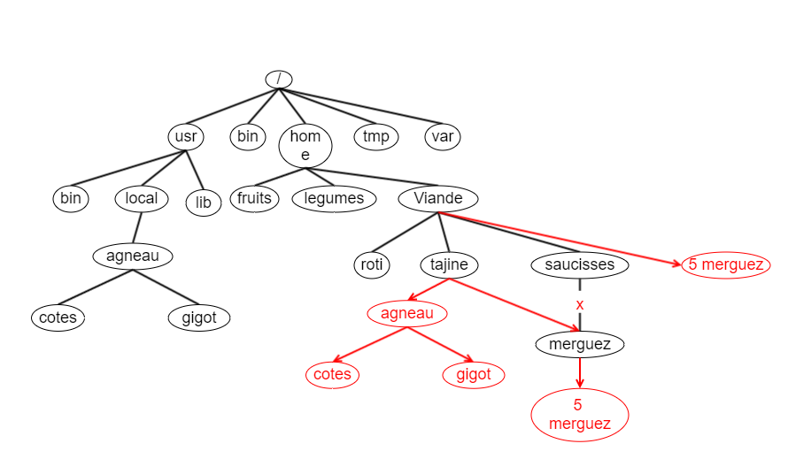

Cours n° 1 : Introduction : Les commandes de bases :
Présentation :
-
Introduction :
GNU/Linux (couramment appelé Linux) est un système d'exploitation basé sur le noyau Linux. Ses principales propriétés : portabilité, multitâche, multi-utilisateur, organosation arborescence des fichiers, ..., en font un outil de prédilection dans le monde des serveurs informatiques. Son intérêt vient également de l'ensemble des outils qui l'accompagnent et qui en font toute sa puissance.
Les derniers développements en font aussi un système d'exploitation tout à fait adapté comme Pc personnel :
-
Une longue et belle histoire :
-
UNIX :
Unix a été créé fin des années 60 (en 1969) par Ken Thompson et Denis Ritchie. En 1972, UNIX est récrit en langage C pour favoriser la portabilité des programmes. Dans un premier temps, le logiciel est fourni aux universités avec ses sources. Cette politique a favorisé la dissémination de UNIX et l'éparpillement des développements en différentes branches : la branche recherche de AT & T laboratoires Bell (UNIX éd 8, 9, 10 jusqu'en 1990), la branche commerciale de AT & T (Syss III, Sys V), l'université de Berkeley en Californie (4.1 BSD, 4.3 BSD, 4.4 BSD). Certainns constructeurs ont éalement commercialisé leur propre version de UNIX (entre autre : IBM (AIX), HP (HP-UX), Microsoft (XENIX), Sun Microsystem (Solaris), etc).
-
GNU (GNu's not Unix) :
http://www.gnu.org/ (nouvelle fenêtre)
C'est un système d'exploitation de type Unix, pensé dans un esprit d'utilisation sans contrainte. C'est un logiciel libre qui donne à l'utilisateur la liberté d'exécuter le programme, d'en étudier son fonctionnement et de l'adapter, d'en distribuer des copies, d'en améliorer les sources. Le projet a été lancé en 1984 par Richard Stallman, rejoint par toute une communauté qui s'est appliquée à développer les outils de base exploitant le noyau.
-
Linux :
En 1987, Andrew S. Tanenbaum conçoit Minix, un petit système d'exploitation pour Pcs, destiné à illustrer son cours de système d'exploitation. En 1991, Linus Torvalds s'inspire de ce petit système d'exploitation pour développer son propre noyau, de la famille de unix, mais sans reprendre de code UNIX. La publication de la première version de son programme attire la sympathie de nombreux passionnés qui vont se joindre à lui pour améliorer ce programme.
-
GNU/Linux :
Le noyau Linux à lui seul n'est pas exploitable sans les outils d'utilisation. Mais rapidement le projjet GNU intègre ce noyau pour en faire un système d'exploitation complet.
-
-
Les distributions Linux :
Deouis les balbutiements du début, de nombreux développements ont amélioré les programme. Certaines personnes ont décidé de compiler une série de prgrammes pour proposer un ensemble cohérent, distribué de manière libre ou commerciale. De nombreuses distributions existent aujourd'hui, chacune ayant ses caractéristiques propres. Les principales sont Debian (développée de manière indépendante, réputée la plus universelle et la plus viable car longuement testée avant d'être publiée, Ubuntu (version grand public qui sort une nouvelle version tous les 6 mois, elle est basée sur Debian), Fedora et sa version commerciale RHEL (Red Hat Entreprise Linux), Slackware (la plus ancienne), CentOS (issue directement des sources de Red Hat).
-
L'organisation de Linux :
GNU/Linux est donc un ensemble de programmes qui exploitent le noyau Linux. Contrairement à Windows, qui est une structure monolithique, Linux adopte une organisation en couche qui apporte une grande diversité, plusieurs programmes peuvent implémenter une même fonctionnalité. Cette organisation laisse le choix à l'utilisateur d'opter pour un environnement plus personnalisé. Par exemple, le noyau peut être exploité par un shell, programme interface en ligne de commandes, mais aussi au travers de commandes ou de librairies standards. L'interface graphique se base sur le protocole X-Window qu'une multitude d'applications exploitent pour fournir différents environnements de travail.
-
Le noyau de Linux :
C'est le coeur du systèlme, le kernel, c'est lui qui gère l'ordinateur. Il est composé de primitives (les appels systèmes) qui exploitent les ressources physiques (disques, processeurs, mémoire, ...), logiques (utilisateurs, processus, fichiers, ...) de l'ordinateur et qui gèrent les communications entre processus (IPC). Il comprend également des tables nécessaires à la mémorisation des informations utilisées par les primitives (table des processus, tables des fichiers, table des utilisateurs connectés, ...).
-
L'environnement de travail :
Contrairement à Windows, sur les machines Linux il n'est pas obligatoire de travailler dans un environnement graphique. Il est possible d'utiliser l'ordinateur.
- Soit en ligne de commandes grâce à un shell activé dans une console, dans un pseudo-terminal ou encore dans un Xterm fenêtre de l'environnement graphique, mais aussi à distance en utilisant un terminal distant ou une émulation terminale (ssh, putty).
- Soit via une interface graphique. Plusieurs applications s'offrent à l'utilisateur (les bureaux graphiques gnome, KDE, ...).
-
L'environnement de travail à l'IPL :
L'environnement de travail que vous allez utiliser à l'IPL consiste en une station de travail Linux (Ubuntu) stockée sur un serveur et accédée en utilisant le protocole "Remote Desktop Protocol" qui offre un bureau graphique distant. L'authentification sur la machine Linux est assurée par le serveur LDAP Windows (l'Active Directory du domaine stud). Tous les exercices doivent être réalisés en ligne de commandes, par exemple dans une fenêtre Xterm de votre environnement graphique X-Window.
-
Briève introduction au shell :
L'utilisation du shell se fait au moyen de commandes introduites au clavier, ce qui peut paraître lourd à utiliser mais reste d'une puissance inégalée, ou dans des scripts, programmes constitués d'un ensemble de commandes. Une commande (mnémonique en général codée sur 2 caractères) peut recevoir 0, 1 ou plusieurs arguments (données traitées par la commande), ainsi que 0, 1 ou plusieurs options qui spécifient la manière dont le traitement sera effectué. Par exemple, la commande cp -r -p /home/bernard /media/MaCle/bu va copier tous les fichiers du répertoire bernard sur la clé USB dans le répertoire bu.
- /home/bernard : source (ensemble des fichiers à copier)
- /media/MaCle/bu : destination (endroit où seront copiés les fichiers)
- -r : de manière récursive (toute l'arborescence)
- -p : en préservant les propriétés des fichiers
Exercices :
-
L'aide en ligne est donnée par la commande man. Elle reprend la spécificité locale des sujets liés à l'implémentation de votre distribution. Cette documentation est divisée en plusieurs sections. Citez et décrivez les 3 pemières sections du man. Pour vous aider, consulter le man de la commande man.
- Shell commands (commande Linux ou commande utilisateur)
- System calls (Appel système)
- librarycalls (bibliothèque de fonction)
Cette application (man) affiche à l'écran la description de la commande, fonction, ... passée en argument; elle accepte plusieurs commandes qui permettent de se déplacer dans le texte ou d'effectuer une recherche :
- <sp> (la barre d'espacement) déplace l'affichage de la taille d'un écran
- <ret> déplace le texte affiché d'une ligne vers le bas
- <b> (la lettre b back) déplace l'affichage de la taille d'un écran vers le haut
- /pattern recherche le pattern dans le texte
- <p> permet de quitter l'application
- Pour l'ensemble des commandes de l'utilisation de l'affichage, voir le manuel de la commande less
-
Donner la commande qui permet d'afficher la liste des utilisateurs connectés au système.
who -
Qu'est-ce que le "login name" d'un utilisateur ? Donnez la commande qui permet d'afficher le "login name" de la personne connectée.
# login name = nom d'utilisateur = identifiant whoami -
Donnez la commande qui permet de donner les informations de "login" de la personne connectée, expliquez les informations fournies.
who am i # donne le login name, le terminal où il est connecté et l'heure -
Donnez la commande qui affiche la ate système.
date -
Donnez la manière d'obtenir la date sous le format : mardi, le 1 janvier 2014.
date "+%A, le %d %B %Y" -
Donnez la commande qui permet de connaître le nom du jour de votre naissance (lun-dim).
date -d '1/1/1990' +%A -
Donnez la commande qui permet de connaître le numéro du jour de votre anniversaire (1-365).
date -d '1/1/1990' +%j -
Donnez la commande qui permet d'afficher le calendrier du mois et de l'année de votre naissance.
cal 1 1990
Cours n° 2 : Le système de fichier : Les manipulations des fichiers :
Présentation :
-
Introduction :
Un des premiers besoins d'un système d'exploitation est la possibilité de stocker de manière permanente les données du syst§me et des utilisateurs.
Généralement, les données sont stockées sur un ou plusieurs disques durs pouvant être découpés en partitions. Linux utilise une nomenclature (/ted/tdmn où td représente le type de disque (s pour SCSI ou SATA), (h pour ide); m est le numéro du disque dur (a pour 1er, b pour le 2ème, etc); n le numéro de la partition sur le disque. Par exemple /dev/sdb3 représente la 3ème partition du 2ème disque SATA) standarisée pour référencer les partitions physiques qu'il rencontre sur une machine. Le nom d'une partition physique permet de l'identifier dans l'ordinateur.
Chaque partition est découpée en blocs de bytes. La taille par défaut est de 512 bytes par bloc. Ce sont ces blocs qui constituent l'espace utilisé pour stocker les données du fichier.
-
L'organisation logique des données :
Dans le monde Unix, les données stockées sur les disques sont organisées de manière arborescente (une structure arborescence est composé de noeuds (éléments internes) pouvant contenir d'autres éléments et de feuilles (éléments externes)) dans une structure unique. Dans ce "file system" Unix, les noeuds sont implémentés au moyen de répertoires et les fichiers contenant les données sont les feuilles de l'arbre.
-
Les fichiers :
Un fichier est un ensemble séquentiel de bytes qui ne contient pas de marque de fin de fichier, c'est la taille, une des propriétés du fichier, qui permet de déterminer la fin du fichier. Il possède d'autres propriétés que nous aborderons plus tard.
Le nom du fichier doit être unique dans son répertoire. Et pour le système de fichier, la notion d'extension est sans objet car il n'en tient aucunement compte. Seules, les applications peuvent éventuellement s'en préoccuper (par exemple, le compilateur Java préférera traiter des sources dont l'extension est ".java").
Dans le monde Linux, il existe 2 sortes de fichiers réguliers, les fichiers de type text (qui contiennent uniquement des caractères imprimables (Ascii) et les fichiers binaires (contenant des enregistrements formatés), des documents formatés (doc, ppt, xls, ...), des librairies, des fichiers compilés, ...
Dans le système de fichiers, on retrouvera également d'autres types de fichiers (les descriptions de devices (/dev), etc.).
-
Les répertoires :
Un répertoire est une sorte de table qui permet de mettre en relation un nom de fichier et une référence (inode) vers le fichier physique sur le disque.
Pour Linux, les répertoires sont des fichiers d'un type spécial, ils peuvent donc être manipulés au moyen des commandes de gestion de fichiers.
-
L'arborescence :
Tous ces fichiers et répertoires sont organisés sous une forme arborescente avec une racine, un répertoire particulier origine de toute la structure, des branches qui aboutissent aux différents éléments de l'arbre : les répertoires (éléments intermédiaires) et les fichiers (éléments terminaux). Dans le monde Unix, le répertoire racine se nomme '/'.
-
Le pathname :
Pour retrouver un fichier dans l'arborescence, le système parcourt l'arborescence à partir de la racine, le chemin parcouru s'appelle le pathname absolu. Dans ce chemin, chaque répertoire traversé est séparé par le caractère '/'; donc, le fichier test.c qui se trouve dans le répertoire tux du répertoire home se notera /home/tux/test.c, ce nom complet est unique sur le système. Utiliser le pathname absolu pour nommer un fichier peut être contraignant, mais il existe une autre manière retrouver un fichier dans l'arbre du système de fichiers, c'est le pathname relatif qui au lieu de démarrer de la racine part du répertoire courant. Le répertoire courant, c'est le répertoire de référence à un moment donné du travail de l'utilisateur est "positionné" quelque part dans l'arborescence, ce répertoire courant, qui varie en fonction des traitements envoyés par l'utilisateur se nomme toujours au moyen du caractère '.'. Le répertoire parent d'un répertoire se nomme '..'.
-
Shell et répertoires :
Lorsqu'il se connecte, l'utilisateur démarre un shell (programme interface entre l'utilisateur et le système) qui le positionne dans un répertoire particulier, le répertoire de login, indiqué par le caractère '~'.
Pour aider l'utilisateur, le shell pour afficher dans son prompt (message d'invite) le nom du répertoire de login.
-
Les commandes utiles :
-
pour manipuler les répertoires :
- cd : change directory
- ls : list information about file(s)
- mkdir : create new folder(s)
- rmdir : remove folder(s)
- pwd : print working directory
-
pour manipuler les fichiers :
- cp : copy one or more files to another location
- rm : remote files
- mv : move or rename files or directories
- touch :change file timestamps
-
pour traiter les fichiers text :
- cat : concatenate and print (display) the content of files
- wc : print byte, word, and line count
- head : output the first part of file(s)
- tail : output the last part of file(s)
- od : dump files in octal and other formats
- nl : number lines and write files
- sort : sort text files
- grep : search file(s) for lines that match a given pattern
- cut : divid a file into a several parts
-
-
Les répertoires particuliers :
- le répertoire racine : /
- le répertoire de login : ~
- le répertoire courant : .
- le répertoire parent : ..
Exercices :
Les répertoires :
-
Donnez la commande qui permet d'afficher le nom du répertoire courant, c'est votre répertoire de login, indiquez le nom de ce répertoire et complétez l'arborescence en y ajoutant votre répertoire de login.
pwd # affiche /home/u1bin000 -
Introduisez la commande ls, qu'affiche-t-elle ?
ls # affiche le contenu du répertoire courant donc ici rien -
Créez le répertoire linux dans le répertoire courant.
mkdir linux -
Créez le répertoire theorie dans le répertoire linux que vous vous venez de créer.
mkdir linux/theorie -
Déplacez-vous dans ce répertoire.
cd linux/theorie -
Affichez le pathname absolu du répertoire courant.
pwd # affiche /home/u1bin000/linux/theorie -
Créez le répertoire exercices dans le répertoire theorie.
mkdir exercices -
Grâce à la commande rmdir, essayez de supprimer le répertoire theorie, en utilisant le pathname absolu. Est-ce possible, si non pourquoi
rmdir /home/u1bin000/linux/theorie # impossible car le répertoire n'est pas vide -
Affichez le contenu du répertoire parent.
ls .. -
Revenez dans le répertoire de login et affichez le contenu du répertoire courant.
cd (ou cd ~ ou cd /home/u1bin000 ou cd ../..) ls
Les fichiers :
-
Grâce à la commande touch, créez le fichier lusreDesCommandes.txt dans le répertoire linux.
touch linux/listeDesCommandes.txt -
Créez le fichier ex1 dans le répertoire exercices.
touch linux/theorie/exercices/ex1 -
Déplacez-vous dans le répertoire exercices et affichez le contenu du répertoire au moyen de la commande ls.
cd linux/theorie/exercices ls -
Affichez de nouveau le contenu du répertoire en utilisant la commande ls > listeDesFichiers puis à nouveau la commande ls, mais seul. Que constatez-vous ?
# Au début, pas d'affichage # Au rappel de la commande, un nouveau fichier est arrivé -
Copiez le fichier listeDesFichiers dans le fichier listeDesFichiers.bu.
cp listeDesFichiers listeDesFichiers.bu -
Copiez le fichier listeDesFichiers dans le répertoire parent.
cp listeDesFichiers .. # le fichier est créé avec le même nom -
Renommez le fichier listeDesFichiers en listeDesFichiers.txt.
mv listeDesFichiers listeDesFichiers.txt -
Positionnez-vous dans le répertoire de login et déplacez le répertoire exercices dans le répertoire linux.
cd mv linux/theorie/exercices linux/ -
Copiez l'arborescence linux dans le répertoire /tmp.
cp -r linux /tmp -
Supprimez le fichier listeDesFichiers.bu.
rm linux/exercices/listeDesFichiers.bu -
Exécutez la commande ~/lesCommandes/whoami; en cas de problème, faites en sorte que cette commande puisse s'exécuter.
# KO car le répertoire n'existe pas mkdir lesCommandes
Les fichiers text :
-
Donez la commande qui affiche le contenu du fichier passwd du répertoire de configuration /etc.
cat /etc/passwd -
Donnez la commande qui affiche le nombre de lignes de ce même fichier.
wc -l /etc/passwd -
Donnez la commande qui affiche la liste des utilisateurs potentiels du système et leur uid (c'est-à-dire le 1er et 3ème champs de chaque enregistrement).
cut -d: -f1,3 /etc/passwd -
Donnez la commande qui affiche les 3 dernières lignes du fichier des utilisateurs.
tail -n3 /etc/passwd -
Donnez la commande qui affiche le contenu du fichier passwd du répertoire de configuration /etc en numérotant les lignes.
nl /etc/passwd -
Donnez la liste des répertoires standards du répertoire racine d'un "File System" Linux et expliquez en l'utilité.
-
/bin : User Binairies
Ce répertoire contient les exécutables binaires. Toutes les commandes utilisées par tous les utilisateurs du système se trouvent dans ce répertoire (ex. : ps, ls, ping, grep, cp).
-
/sbin : System Binairies
Ce répertoire contient également des exécutables binaires. Les commandes Linux sous ce répertoire sont utilisées généralement par des administrateurs du système à des fins de maintenance du système (ex. : iptables, reboot, fdisk, ifconfig, swapon).
-
/etc : Configuration Files
Ce répertoire contient des fichiers de configuration requis par tous les programmes.
-
/dev : Device Files
Ce répertoire contient des fichiers de périphérique comprenant des dispositifs terminaux, usb, ou tout autre appareil connecté au système.
-
/proc : Process Information
Ce répertoire contient des informations sur le processus de système.
-
/var : Variable Files
Ce répertoire contient des fichiers variables qui inclut les fichiers journauxx du système (/var/log), les packages et fichiers de base de données (/var/lib), les emails (/var/mail), les files d'attente d'impression (/var/spool), verrouiller les fichiers (/var/lock) et les fichiers temporaires nécessaires entre les redémarrages (/var/tmp).
-
/tmp : Tempory Files
Ce répertoire contient les fichiers temporaires créés par le système et les utilisateurs qui sont supprimés lorsque le système est redémarré.
-
/usr : User Programs
Ce répertoire contient les binaires, les bibliothèques, la documentation et le code source pour les programmes de deuxième niveau.
/usr/bin contient des fichiers binaires pour les programmes utilisateur.
/usr/sbin contient des fichiers binaires pour les administrateurs système.
/usr/lib contient les bibliothèques /usr/bin et /usr/sbin.
/usr/local contient des programmes utilisateurs que vous installez de la source.
-
/home : Home Directories
Ce répertoire contient les répertoires de login de tous les utilisateurs avec leurs fichiers personnels.
-
/boot : Boot Loaer Files
Ce répertoire contient des fichiers liés au chargement du démarrage.
-
/lib : System Librairies
Ce répertoire contient des fichiers de bibliothèque qui prend en charge les fichiers binaires situés sous /bin et /sbin.
-
/opt : Optional add-on Apps
Ce répertoire contient les applications supplémentaires provenant de fournisseurs individuels.
-
/mnt : Mount Directory
C'est un répertoire temporaire de montage où les administrateurs systèmes peuvent monter des systèmes de fichiers.
-
/media : Removable Devices
C'est un répertoire temporaire pour les périphériques amovibles.
-
/srv : Service Data
Ce répertoire contient des services spécifiques au serveur de données relatives.
-
Cours n° 3 : Le système de fichier : Les propriétés :
Présentation :
-
Introduction :
Nous avons vu au cours précédent que les données pouvaient être stockées sur des disques durs et acédées au travers d'une structure arborescente de fichiers. Mais comment le système d'exploitation peut-il retrouver un fichier sur la partition
-
Inode :
Sur une partition, chaque fichier est identifié par son numéro appelé inode. Cet inode est mis en relation avec le nom du fichier dans un répertoire qui peut être vu comme une table.
Lorsque l'on fournit le nom d'un fichier, le système retrouve l'inode dans le répertoire si l'élément y est présent; grâce à cet inode, le gestionnaire des disques recherche l'adresse des blocs de données dans la table des inodes liée à la partition, cette adresse lui permet d'accéder aux données du fichier.
Il est possible d'afficher le numéro d'inode d'un fichier grâce à la commande ls -i (option i).
-
Les liens :
Un lien est le moyen d'accéder à un fichier en lui spécifiant un autre nom. En Linux, il existe deux manières de spécifier un lien sur un fichier, le lien physique (hard link) et le lien symbolique (symlink).
-
Le Lien physique consiste à créer une nouvelle entrée dans un répertoire en utilisant l'inode d'un fichier déjà existant, dans ce cas, un même fichier possède deux noms. Le lien physique nécessite évidemment que les deux noms soient repris dans la même partition, mais pas nécessairement dans le même répertoire. Puisqu'ils partagent le même inode, aucune donnée n'est ajoutée dans le "file system".
La commande permettant de créer un lien physique est la commande ln src dst.
-
Par contre, le lien symbolique utilise une indirection (comme les raccourcis en Windows).
Dans ce cas, un nouvel élément est ajouté dans le système de ficier (c'est-à-dire un nouvel iode); cet élément va contenir la référence sur le nom de fichier; contrairement aux liens physiques, les liens symboliques peuvent traiter des fichiers qui se trouvent sur des partitions différentes.
La commande pour créer un lien symbolique est la commande ln -s src dest.
Pour retrouver les données enregistrées sur le disque à partir d'un lien symbolique, le gestionnaire de fichiers récupère l'inode du lien symbolique (1) qui lui permet d'accéder (2) aux informations du lien symbolique stockées dans la table des inodes, celles-ci permettent de retrouver (3) le nom du fichier (fichier.txt) qui donne accès aux blocs de données (4-5-6).
-
-
La structure inode :
Si l'inode est un numéro identifiant le fichier sur la partition, il représente également une structure qui reprend toutes les propriétés du fichier, notamment le numéro d'inode, la taille du fichier, le nombre de liens (physqiues), différents horodatages (timestamps), le propriétaire et le groupe propriétaire, les droits d'accès, plus d'autres informations (le nom du fichier n'est pas repris dans la structure inode).
La commande qui permet d'afficher le contenu de l'inode est la commande stat fichier.
Certaines propriétés sont affichées grâce à la commande ls -l fichier.
-
Timestamp :
Les fichiers Linux sont caractérisées par 3 horodatages : le ctime (change time) indique le moment où l'inode a été modifié pour la dernière fois, c'est-à-dire quand une des propriétes a été modifiée, le mtime (modified time) indique la date (et l'heure) de la dernière modification du contenu fichier et le atime (access time) donne la date du dernier accès au fichier.
La commande touch fichier permet de modifier le mtime d'un fichier sans en modifier le contenu.
La commande ls permet d'afficher le ctime (option -lc), le mtime (option -l), le atime (option -lu).
-
Propriétaire :
Chaque ressource Linux possède un propriétaire (user/owner) et un groupe propriétaire. Ceux-ci sont donnés par les numéros uid (user id) et gid. Pour retrouver les noms correspondants, le système doit consulter le fichier /etc/passwd (pour le uid) et le fichier /etc/group (pour le gid).
Les commandes chown et chgrp permet de modifier cette propriété des fichiers, mais elles sont réservées à l'utilisateur privilégié (root).
-
Les droits d'accès :
La dernière propriété que nous allons développer permet de spécifier les droits positionnés sur les fichiers. Ces droits sont accordés à trois catégories d'utilisateurs : le propriétaire, le groupe et les autres utilisateurs du système.
Pour chacune de ces catégories, il est possible de définir 3 niveaux d'accès différents : le droit de lecture (Read) permet d'accéder au contenu du fichier, le droit d'écriture (Write) permet de modifier le fichier tandis que le droit d'exécution (eXecute) permet d'"exécuter" le fichier. L'interprétation de ces droits est différente suivant qu'il s'agisse d'un fichier régulier ou d'un répertoire : le droit d'écriture sur un répertoire permet d'en modifier le contenu, c'est-à-dire pouvoir ajouter ou supprimer un fichier, le droit d'exécution permet de traverser le répertoire pour accéder aux sous-répertoires.
La commande chmod mode fichier permet de moifier les droits sur le fichier. Le mode, 1er argument de la commande, spécifie les droits, il peut être donné en notation symbolique : le droits RWX appliqués aux utilisateurs U (user (propriétaire)), G (group), O (other (autres)) ou en notation octale (4→R 2→W 1-→X, pour le propriétaire, le groupe et les autres) sur trois groupes de chiffres : 1 (eXecute), 2 (Write), 4 (Read).
-
Pour imposer de nouveaux droits, sans tenir compte des droits déjà existants, le mode peut être spécifié en noattaion octale ou en symbolique.
Par exemple : pour accorder au fichier exemple.txt tous les drots au propriétaire, permettre la simple consultation par le groupe et aucun droit aux autres utilisateurs, nous utiliserons la notation octale 750 (7 = 4 + 2 + 1, 5 = 4 + 1, 0 = 0 + 0 + 0) ou la notation symbolique (U = RWX, G = RX, O =).
chmod 750 exemple.txt # ou chmod u=rwx,g=rx,o= exemple.txt -
Pour modifier des droits existants, il est obligatoire de spécifier le mode en notation symbolique (+ : pour ajouter des droits, - pour supprimer certains droits).
Par exemple : Pour ajouter le droit d'exécution pour le propriétaire et le groupe, chmod ug+x exemple.txt.
-
-
Exercices :
Les liens :
-
Crez le répertoire seance3 et déplacez-vous dans ce nouveau répertoire.
mkdir seance3 cd seance3 -
Créez le répertoire linux.
mkdir linux -
Créez le fichier fichier.txt grâce à la commande ls ~ > fichier.txt et créez un lien symbolique lien.sym sur le fihcier.
touch fichier.txt ln -s fichier.txt lien.sym -
Créez un lien physique lien.phy sur le même fichier.
ln fichier.txt lien.phy -
Affichez les inodes de ces fichiers. Que constatez-vous concernant ces identifants ?
ls -i # fichier.txt et lien.phy ont le même inode # lien.sym a une autre couleur -
Affichez le contenu des 2 liens en utilisant la commande cat.
cat lien.phy cat lien.sym # même contenu que fichier.txt différents liens -
Supprimez le fichier fichier.txt, ensuite ré-affichez le contenu des 2 liens, notez les modifications apportées aux 2 liens.
rm fichier.txt # le lien symbolique est mort -
Introduisez la commande date > fichier.txt et ré-affichez le contenu des 2 liens, expliquez le résultat obtenu.
cat lien.phy # pas de changement de lien cat lien.sym # lien.sym revient
Les timestamps :
-
Quelle option de la commande ls utiliser pour afficher la date de dernière modification des fichiers du répertoire courant.
ls -l -
Quel est le résultat de la commande touch fichier.txt ? Pour s'en rendre compte introduisez la commande ls -l.
# la date est modifiée -
Grâce à la commande ls, affichez la date du dernier accès au fichier fichier.txt.
ls -lu fichier.txt -
Comment la modifier ?
cat fichier.txt ls -lu fichier.txt -
De quand date la dernière modification des status du fichier fichier.txt (comment trouver cette date ?). Donnez une commande qui permet de modifier cette date.
ls -lc fichier.txt ln fichier.txt fichier.bu
Les propriétés : les droits :
-
Quelle est la commande qui affiche les droits du répertoire de login, quels sont ces droits ?
ls -ld ~ # rwxr_xr_x -
Supprimez les droits d'écrituresur le fichier fichier.txt.
chmod -w fichier.txt -
Exécutez la commande date >> fichier.txt, que constatez-vous et pourquoi ?
# message d'erreur car le shell veut modifier le fichier -
Supprimez les droits d'écriture sur le répertoire ~/seance3 et supprimez l'extension .bu au fichier fichier.bu, que constatez-vous et pourquoi ?
chmod -w . mv fichier.bu fichier # erreur car le répertoire est protégé en écriture -
Repositionnez-vous dans le répertoire de login et supprimez le droit d'exécution sur le répertoire ~/seance3.
cd chmod -x seance3 -
Copiez le fichier fichier.txt dans le répertoire linux.
cp seance3/fichier.txt seance3/linux # KO car plus d'accès au répertoire seance3 -
Remettez les droits d'exécution sur le répertoire seance3 en y supprimant le droit de lecture; pouvez-vous afficher le contenu du fichier fichier.txt ?
chmod +x,-r . cat seance3/fichier.txt # OK mais la complétion du nom du fichier est KO -
Affichez les droits sur le répertoire seance3 et ensuite sur le contenu du répertoire.
ls -ld seance3 # pas de souci ls -l seance3 # KO car pas droit read sur le répertoire -
Créez un répertoire lesCommandes et pour ce répertoire, donnez les droits rwx pour le propriétaire, r_x pour le groupe et aucun droit pour les autres utilisateurs du système.
mkdir lesCommandes chmod 750 les Commandes -
Positionnez l'
umask pour supprimer les droits au groupe et aux autres utilisateurs lors de toute création de fichier. Testez votre solution.umask 0077 mkdir soumissions touch fichier1.txt
Cours n° 4 : Les outils du shell : La redirection :
Présentation :
-
Les fichiers standards :
Toute application Linux (c'est également vrai sur d'autres systèmes) utilise trois fichiers spéciaux ouverts dès le début de son exécution, ce sont les fichiers stdin (en Java, il s'appelle "System.in"), stdout (en Java, il s'appelle "System.out"), stderr (en Java, il s'appelle "System.err"). En temps normal, le fichier stdin représente le clavier, c'est-à-dire que lire le fichier stdin signifie lire les caractères introduits au clavier. D'autre part, les fichiers stdout et stderr représentent l'écran, c'est-à-dire que ces fichiers envoient leurs données à l'écran de la console; pour stdout, ce sont les messages normaux tandis que pour stderr, ce sont les messages d'erreur.
-
La redirection :
Le shell, le programme qui sert d'interface entre l'utilisateur et le système, peut offrir un certain nombre de services. Parmi ceux-ci, nous abordons ici la redirection. Ce service permet de modifier les fichiers standards sans rien modifier à l'application exécutée.
-
La redirection en entrée :
Si l'on désire remplacer la source des caractères introduits au clavier par des lignes de caractères stockées dans un fichier, il n'est pas nécessaire de modiifer le programme, il suffit de demander au shell de rediriger le clavier vers le fichier, l'application exécutée ne fera pas la différence. Pour indiquer cette redirection au shell, il suffit d'utiliser le symbole '<'.
Par exemple, la commande wc -l < monFichier.txt introduite au shell va indiquer au système d'approvisionner l'application avec les lignes du fichier monFichier.txt, donc le programme wc va compter le nombre de lignes du fichier monFichier.txt plutôt que celles introduites au clavier.
-
La redirection en sortie :
Si l'on désire enregistrer les caractères produits par l'application plutôt que de les afficher à l'écran, il suffit de demander au shell de rediriger l'output standard vers le fichier, l'application exécutée ne verra pas la différence. Pour indiquer cette redirection au shell, il suffit d'utiliser le symbole '>'.
Par exemple, la commande ls -l > maListe.txt introduite au shell va indiquer au système d'ajouter le résultat de l'application ls au contenu déjà présent dans le fichier maListe.txt, plutôt à l'écran; si le fichier existe, il est supprimé.
-
La redirection en sortie par ajout :
La redirection d'output peut se faire en ajoutant les données au fichier spécifié. Pour indiquer cette indirection au shell, il suffit le symbole '>>.
Par exemple, la commande ls - l >> maListe.txt introduite au shell va indiquer au système d'ajouter le résultat de l'application ls au contenu déjà présent dans le fichier maListe.txt. Si le fichier n'xiste pas, il sera créé.
-
La redirection des messages d'erreur :
Si l'on désire récupérer les messages d'erreurs écrits par une application, il est possible de spécifier au shell lors de l'appel de la commande que la destination de ces messages est modifiée et que ces messages doivent être sauvés dans un fichier plutôt qu'à l'écran. Pour indiquer cette redirection au shell, il suffit d'utiliser le symbole '2>.
Par exemple, la commande mkdir monRep 2> mesErreurs.err introduite au shell va indiquer au système de sauver les messages d'erreur générés par l'application mkdir dans le fichier mesErreurs.err, plutôt qu'à l'écran.
-
Le pipe :
C'est le mécanisme de redirection qui permet de fournir à un processus l'output standard d'un autre processus, c'est le shell qui gère le mécanisme de transfert des données. Il suffit d'utiliser le symbole '|' entre les deux applications.
Par exemple, la commande ls | wc -l introduite au shell va compter le nombre de lignes écrites par la commande ls, c'est-à-dire que l'ensemble des deux commandes va fournir le nombre de fichiers du répertoire courant.
-
La substitution de commande :
Ce n'est pas à proprement parler de la redirection, mais c'est malgré tout la récupération de l'output standard d'une application. Ces données récupérées de stdout sont fournies en argument à une autre commande. Pour indiquer au shell cette substitution de commande, il faut utiliser les caractères backquotes '`'.
Par exemple, la commande echo il y a `ls | wc -l` fichiers dans le répertoire. introduite au shell va compter le nombre de lignes écrites par la commande ls et utiliser ce nombre comme argument de la commande echo.
Il est possible d'utiliser une autre notation pour indiquer la substitution de commande : $(cmd).
-
Les filtres :
Ce sont des applications qui traitent des données reçues sur stdin et qui écrivent le résultat sur stdout.
-
Affichage à l'écran (l'output n'est pas écrit sur stdout mais directement à l'écran) :
- more, less : affichage écran par écran
- tee : envoie de l'output sur stdout et en même temps dans un fichier
-
Output normal (peuvent recevoir des fichiers en argument à la place de lire sur stdin) :
- cat : concatène le contenu des fichiers donnés en argument et l'écrit sur stdout, sans argument cat lit sur stdin
- tac : idem mais en inversant l'ordre des lignes des fichiers
- head : affiche les premières lignes de stdin
- tail : affiche les dernières lignes de stdin
-
Traitement du contenu de stdin :
- grep : sélectionne certaines lignes de stdin (en utilisant les reg exp)
- wc : compte le nombre de caractères, de lignes, de mots
- sort : trie les lignes
- od : dump de stdin ou du fichier
- nl : numérote les lignes
- tr : traduit les lignes
- cut : coupe les lignes
-
-
Les fichiers spéciaux :
Linux possède dans le répertoire /dev des fichiers spéciaux. Celui qui nous intéresse le plus est le fichier /dev/null qui est un fichier poubelle qui absorbe les données pour les ignorer.
Par exemple, la commande find / 2> /dev/null va exécuter la commande find en ignorant les messages d'erreur qui sont redirigés vers ce fichier poubelle.
Exercices :
La redirection simple :
-
Récupérez la liste longue des fichiers du répertoire racine dans le fichier racine.txt.
ls -l > racine.txt -
Affichez le nombre de lignes contenues dans le fichier racine.txt que vous venez de créer.
-
Sans redirection :
wc -l racine.txt -
Avec redirection :
wc -l < racine.txt -
Quelle est la différence entre ces deux solutions ?
# Sans redirection, la commande gère le fichier et donc elle connaît son nom et le donne, avec redirection la commande ignore l'origine des données.
-
-
Créez le répertoire u1bin000 dans le répertoire racine de l'arborescence, les messages d'erreurs seront stockés dans le fichier mesErreurs.txt.
mkdir /u1bin000 2> ~/mesErreurs.txt -
Stockez dans le fichier bin.cmd la liste des commandes du répertoire /bin, précédée du nom répertoire. Faites de même avec les commandes du répertoire /usr/bin dans le fichier usrBin.cmd (en plusieurs commandes).
echo "/bin" > bin.cmd; ls /bin >> bin.cmd; # idem pour /usr/bin -
Stockez dans le fichier lesCommandes.linux le contenu des 2 fichiers précédents.
cat bin.cmd usr.cmd > ~/lesCommandes.linux -
Affichez page à page, le contenu de ce fichier.
less ~/lesCommandes.linux # la redirection n'est pas nécessaire -
Créez un fichier entete.txt qui contient une ligne composée du caractère # suivi de votre nom, de votre prénom et du numéro de votre série, en utilisant la commande cat.
cat > entete.txt <ctrl+d>
Le pipe :
-
Donnez la combinaison de commandes qui permet d'afficher le nombre de fichiers de la directory de login.
ls ~ | wc -l -
Comment afficher la liste numérotée et en majuscule des fichiers du répertoire de login.
ls | nl | tr "a-z" "A-Z" # ou encore ls ~ | tr [:lower:] [:upper:] | nl -
Affichez écran par écran le contenu du répertoire au moyen de la commande ls -l.
ls -l | less # donne une liste longue (les propriétés) des fichiers
Exercices complémentaires :
-
À partir des fichiers bin.cmd et usr.cmd, créez le fichier lesCommandes2.linux dont la 1ère ligne est "Les commandes de Linux" et qui contient toutes les commandes stockées dans ces fichiers.
echo "Les commandes de Linux" > lesCommandes2.linux tail -n+2 bin.cmd >> lesCommandes2.linux tail -n+2 usrBin.cmd >> lesCommandes.linux -
Copiez dans le fichier dump.txt le contenu en hexadécimal du fichier que vous venez de créer et affichez -le à l'écran.
od lesComandes2.linux | cut -c "8-" | tee dump.txt -
La commande find / permet de parcourir l'arborescence de votre file system de manière récursive. Utilisez cette commande pour compter le nombre de fichiers auquel vous avez accès dans tout le file system de votre machine en évitant d'être pollué par les mssages d'erreur.
find / 2> /dev/null | wc -l -
Ajoutez dans le fichier entete.txt une ligne commençant par le caractère "# et contenant la datesous la forme 'nom_du_jour nr_du_jour nom_du_mois année'.
echo # `date "+%A %d %B %Y"` >> entete.txt
Cours n° 5 : Les outils du shell : alias, history, variables, ... :
Présentation :
-
Introduction :
En mode de commandes, l'utilisateur accède au système grâce à un programme spécial, le
shell . Le monde Unix propose à l'utilisateur plusieurs programmes shells différents : en Linux, le shell par défaut est le bash. Les fonctionnalités offertes par les différents shells sont assez semblables, même si la syntaxe peut parfois être différennte. -
Les différents modes :
Le shell peut fonctionner dans différents modes, en fonction de la manière dont il est invoqué.
-
En ouverture de session, au login, on démarre un shell de login; le programme qui s'exécute est le programme spécifié dans l'enregistrement du fichier/etc/passwd, lié à l'utilisateur
Par exemple, pour l'utilisateur u1bin enregistré dans le fichier /etc/passwd, u1bin:x:1003:1003::/home/u1bin:/bin/bash, le répertoire de login est /home/u1bin et son shell de login est bash. C'est un shell interactif, c'est-à-dire que sa fonction principale est d'interpréter les caractères introduits au clavier par l'utilisateur.
-
À l'ouverture d'un xterm ou en lançant le programme (bash, /bin/su, ...), le shell est un shell non-login.
-
Le troisième mode, le shell non-interactif, est exécuté à l'appel d'un script.
Suivant ces différents modes, il y a une exécution automatique de fichiers de démarrage (startup files). Ces fichiers de configuration permettent d'initialiser l'environnement de travail : instancier certaines variables (par exemple PATH), exécuter des commandes de configuration (par exemple umask), ...
Dans un shell de login, les fichiers de configuration sont les fichiers /etc/profile (pour les configurations communes à tous les utilisateurs) et ~/.bash_profile (pour les particularités de l'utilisateur).
Le démarrage du shell interactif non-loginrécupère l'environnement de travail et exécute le fichier ~/.bashrc.
Le shell non-interactif n'exécute aucun fichier de démarrage, mais il récupère l'environnement du shell d'origine.
En fin de session, il y a exécution éventuelle du fichier ~/.bash_logout.
-
-
Les services du shell :
À côté de l'interprétation et de l'exécution des commandes, le shell offre une série de services qui aident l'utilisateur. Le premier service déjà abordé est la redirection. Nous allons maintenant voir d'autres services offerts par le bash.
-
La gestion des variables :
Dans les shells, il existe deux sortes variables, les variables locales et les variables d'environnement. Les variables sont définies lors de leur première affectation maVariable=uneValeur.
L'utilisation du contenu d'une variable se fait grâce à l'opérateur $.
Par exemple, echo $maVariable.
Les variables d'environnement sont des variables (+/- globales) accessibles dans les processus démarrés à partir du shell.
Il existe des variables d'environnement prédéfinies dans le shell qui permettent de configurer le shell par exemplePATH=/usr/local/bin:/usr/bin:/bin et l'utilisateur peut définir ses propres variables d'environnement en exportant la variable (le nom de la variable doit être en majuscule) : export MA_VARIABLE.
Remarque : les caractères spéciaux tels que le $ peuvent être protégés pour perdre leur fonctionnalité dans quotes (apostrophes) ou par le caractère |, mais le caractère $ garde sa signification dans les doubles quotes (guillemets).
Donc, echo $maVariable et echo "$maVariable" affiche le contenu de la variable tandis que echo '$maVariable' et echo \$maVariable affiche $maVariable.
-
Certaines commandes internes :
Les commandes les plus fréquemment utilisées sont reprogrammés dans le shell pour réduire le temps de recherche et d'exécution de la commande.
Pour retrouver le type des commandes, on peut utiliser la commande type. Par exemple, type ls.
Les commandes externes doivent être appelées par le nom absolu mais le shell offre dans la variable d'environnement PATH une liste de répertoires qui peuvent permettre de construire ce path absolu.
Par exemple, grâce au contenu de la variable PATH, PATH=/usr/local/bin:/usr/bin:/bin quand on tape la commande mkdir, le shell construit les paths /usr/local/bin/mkdir, /usr/bin/mkdir ou /bin/mkdir et peut ainsi retrouver la commande voulue par l'utilisateur.
Les commandes peuvent être enchaînées sur une seule ligne (un seul '\n') :
-
soit de manière inconditionnelle par ';' : ls - l ; cd monRep
-
soit de manière conditionnelle && la deuxième commande est exécutée si la première a réussi sont traitement code = 0) (|| la deuxième commande est exécutée si la première a retourné un code > 0).
ls monRep || mkdir monRep # je crée le répertoire s'il n'existe pas ls monRep && cd monRep # je change de répertoire s'il existe
-
-
Les alias :
Dans le shell, un alias est un raccourci vers une commande. L'alias se crée au moyen de la commande alias.
Par exemple, alias ll='ls -l' crée un alias qui s'appelle la commande ll et qui appelle la commande ls -l. La commande alias sans argument affiche la liste des alias et la commande unalias supprime un alias. Attention, l'alias est local au shell et disparaît à la fin du shell. Pour le retrouver dans chaque shell, il faut le définir dans un fichier de configuration.
-
L'history :
L'historyest le service du shell qui permetde stocker les commandes introduites de manière à pouvoir les récupérer. L'history est local au shell mais peut être sauvé à la fin du shell.
La récupération d'une commande de l'history se fait à l'usage de la touche '↑' ou du caractère '!'.
Les commandes récupérées par la touche '↑ peuvent être modifiées directement tandis que les commandes récupérées par le caractère '!' doivent être exploitées pour en extraire un élément et éventuellement pour le modifier.
-
!n : Récupération d'une commande par son numéro absolu
-
!-n : Récupère d'une commande en remontant dans l'history de n commandes
-
!str : Récupération de la dernière commande commençant la chaîne str
-
!?str? : Récupération de la commande contenant la chaîne str
-
Un format particulier permet de modifier la dernière commande introduite : ^abc^def. Après la commande mkdir fichier1, la modification ^1^2 va permettre d'exécuter la commande mkdir fichier2.
-
-
La complétion :
La complétion est une facilité apportée par bash pour compléter automatiquement les noms de fichiers à partir des premiers caractères introduits par l'utilisateur.
<tab> complète jusqu'à rencontrer une ambiguïté.
<tab><tab> donne la liste des noms possibles.
-
Les méta-caractères (globbing) :
Ce sont des caractères qui ont une signification particulière dans le nom des fichiers du répertoire considéré :
-
* représente 0, 1 ou plusieurs caractères. Par exemple, ls -l *.java donne la liste des fichiers d'extension java.
-
? représente 1 caractère. Par exemple, rm fichier.? supprime tous les fichiers d'extension sur un caractère.
-
[a-r] ou [abcde] représente un quelconque caractère de la liste indiquée entre les crochets soit par une intervalle, soit par une liste complète. Par exemple, cp fichier[0-5] /tmp copie les fichiers dont le nom commence par fichier et se termine par un chiffre compris entre 0 et 5.
-
-
Exercices :
History :
-
En utilisant au mieux les faciliés offertes par l'history, créez le répertoire exercicesShell et déplacez-vous y pour créer les fichiers test.txt et test.bu.
mkdir exercicesShell cd !$ touch test.txt ^txt^bu -
Rappelez la commande ls préccédemment introduite.
!ls
Les commandes :
-
Parmi les commandes suivantes, citez celles qui sont internes au shell, les commandes du répertoire /bin et celle du répertoire /usr/bin: (cd, chmod, cp, date, echo, head, pwd, whoami).
type nom_de_la_commande-
interne : cd, echo, pwd
-
/bin : cp, date, touch
-
/usr/bin : head, whoami
-
Les variables :
-
Affichez le contenu de la variable PATH puis supprimez son contenu et vérifiez.
echo $PATH; PATH= !echo -
Déplacez-vous dans le répertoire parent.
cd .. -
Affichez le contenu du répertoire courant (que se passe-t-il ?).
ls # problème à cause de $PATH vide -
Positionnez la variable PATH avec la valeur /usr/bin:/bin: et rappelez la commande ls.
PATH=/usr/bin:/bin:; !ls -
Comment afficher une ligne contenant le texte "$PATH contient ..." où ... représente le contenu de la variable PATH ?
echo "\$PATH contient $PATH"
Alias :
-
Affichez la liste des alias.
alias -
Créez un alias h qui affiche l'history et testez-le.
alias h=history; h -
Créez un alias qui modifie l'usage de la commande rm en lui imposant l'option -i.
alias rm="rm -i" -
Testezl'alias en supprimant le fichier test.bu.
rm exercicesShell/test.bu -
Comment éviter l'usage de cet alias pour imposer une suppression de fichier sans demander de confirmation ?
/bin/rm fichier
Globbing :
-
Donnez la commande qui affiche la liste des fichiers du répertoire /usr/bin dont le nom commence par la lettre z.
ls /usr/bin/z* -
Donnez la commande qui compte tous les fichiers du répertoire /usr/bin dont le nom contient au moins 2 lettres a. Combinez les commandes ls et wc.
ls /usr/bin/*a*a* | wc -l -
Donnez la commande qui affiche la liste des fichiers du répertoire /usr/bin dont le nom contient la lettre y ou z.
ls /usr/bin/*[yz]* -
Donnez la commande qui affiche la liste des fichiers du répertoire /usr/bin dont le nom est formé de 3 lettres.
ls -d /usr/bin/??? -
Donnez la commande qui affiche la liste des fichiers du répertoire /usr/bin dont le nom contient au moins une voyelle majuscule.
ls /usr/bin/*[AEIOUY]* # ou encore ls /usr/bin/*[:VOYEL:]*
Exercice supplémentaire :
-
Reprenez l'exercice 5 sur les variables mais en affichant les différents répertoires un par ligne.
echo "\$PATH contient $PATH" | tr : \\n
Cours n° 6 : Exercices Linux : find et grep :
Présentation :
-
Introduction :
find et grep sont deux commandes Linux qui effectuent des recherches. Mais la comparaison s'arrête là car find travaille sur le file system et recherche des fichiers tandis que grep analyse des lines de texte (sur stdin ou dans un fichier) et sélectionne celles qui correspondent à un motif (une exrpression régulière (RegExp ou plus exactement expression rationnelle)).
-
La commande find :
La commande find permet de rechercher dans une arborescence une série de fichiers. Les critères de sélection sont basés sur les propriétés des fichiers. De plus, la commande find permet d'effectuer des actions sur les fichiers qui correspondent aux critères spécifiés lors de l'appel de la commande.
La commande travaille de manière récursive à partir d'un ou de plusieurs répertoires spécifiés en argument à la commande.
-
La syntaxe :
La commande find reçoit en argument une liste de répertoires, points de départ d'arborescences du file system Linux et une liste d'éoptions" spécifiant les critères de sélection et les actions à appliquer aux fichiers trouvés.
find [rep [...]] [-critère [...]] [-action [...]]-
Si l'utilisateur ne spécifie aucun répertoire en argument, la commande traite le répertoire courant.
-
Si l'utilisateur ne donne aucun critère de sélection, la commande sélectionne tous les fichiers de l'arborescence.
-
Si l'utilisateur n'indique aucune action, la commande affiche le nom du fichier sur stdout.
-
-
Les critères de sélection :
-
Si plusieurs critères sont introduits lors de l'appel de la commande, ils sont combinés par un opérateur implicite "et", c'est-à-dire que les fichiers doivent respecter tous les critères pour être sélectionnés. Mais il est également possible de spécifier des opérateurs booléens (voir man).
-
Sur le type : -type :
La sélection peut limiter les fichiers retenus en se basant sur le type de fichiers : les principaux types utilisés par ce critère sont d (directory : répertoire), f (fichier) et l (lien symbolique).
find . -type d # sélectionne tous les répertoires de l'arborescence issue du répertoire courant. -
Sur le nom : -name :
La sélection se base sur le nom des fichiers (le critère pour interpréter les caractères du globbing du shell).
find . -type f -name "*.txt" # sélectionne tous les fichiers réguliers dont le nom se termine par .txt -
Les critères basés sur des valeurs numériques :
Les paramètres numériques peuvent être données :
-
soit de manière absolue (n), la valeur vaut juste n
-
soit de manière positive (+n), ce qui signifie supérieure à n
-
soit de manière négative (-n), ce qui signie inférieure à n
-
-
Sur les horodatages : mtime, ctime et atime :
Les trois horodatages mémorisés dans l'inode sont utilisables comme critère de délecton de find. Le paramètre numérique est interprété comme un multiple de 24 heures.
-
n : Par exemple, la commande find ~ -mtime 7 permet de rechercher tous les fichiers du répertoire courant dont la dernière modification a été apportée il y a une semaine.
-
+n : find ~ -mtime +7 sélectionne tous les fichiers dont la dernière modification date de plus d'une semaine (plus vieux que 7*24heures).
-
-n : find ~ -mtime -7 sélectionne tous les fichiers dont la dernière modification a été réalisée dans la semaine (plus récent que 7*24heures).
-
-
Sur les droits : -perm :
Les droits peuvent être utilisés comme critère de sélection.
-
-perm mode : le fichier doit avoir les mêmes droits que ceux dnnés par mode.
-
-perm -mode : le fichier doit avoir au moins tous les droits spécifiés dans mode (éventuellement d'autres droits peuvent être positionnés sur le fichier).
-
-perm /mode (+mode dépréciée) : au moins un des droits donnés dans mode oit être positionné sur le fichier.
Le mode peut être spécifié soit dans sa forme octale, soit symbolique. Par exemple :
-
find ~ -perm 0777 : tous les fichiers qui ont tous les droits.
-
find ~ -perm -0444(-ugo=w) : tous les fichiers modifiables par le propriétaire et le groupe et les autres utilisateurs système.
-
find ~ -perm /0444(/ugo=w) : tous les fichiers modifiables par le propriétaire, le groupe ou même les autres utilisateurs du système.
-
-
D'autres critères de sélection peuvent être spécifiés (voir man).
-
-
Les actions :
-
-exec : permet d'exécuter une commande sur chaque fichier sélectionné.
find ~ -name "*.tmp" -exec rm {} \;où {} représente le nom de chaque fichier sélectionné.
où ; marque la fin de la commande à exécuter.
où \ protège le caractère de son interprétation par le shell.
-
-ok : semblable à la précédente mais avec demande de confirmation.
-
-ls : exécute la commande ls sur les fichiers sélectionnés.
-
-
-
La commane grep :
La commande grep est une commande filtre de Linux qui sélectionne certaines lignes d'entrée (stdin ou fichier(s)) et les écrit sur stdout.
-
La syntaxe :
grep [options] motif [fichier [...]]Le motif est obligatoire et représente une expression régulière, la commande accepte un ou plusieur(s) en argument (par défaut lit sur stdin).
-
Les options :
-
-E (egrep) : utilise des expressions régulières étendues.
-
-v : inverse la sélection.
-
-l : donne le nom des fichiers sans afficher les lignes sélectionnées.
-
-L : donne uniquement le nom des fichiers qui ne contiennent aucune ligne correspondant au motif.
-
-o : affiche uniquement la partie des lignes correspondant au motif.
-
-q (quiet)^n'affiche rien mais positionne le return code.
-
-n : affiche le numéro de la ligne.
-
-
Les expressionnes rationnelles (RegExp) :
-
Les caractères de base :
La plupart des caractères se correspondent à eux-mêmes. Les méta-caractères (qui ont une signification particulière) doivent être échappés (\) pour représenter le caractère (sans sa fonctionnalité).
-
Le caractère '.' représente n'importe quel caractère.
-
Les ancres :
Le caractère '^' représente une chaîne vide en début de ligne et '$' en fin de ligne : '^[0-9]' recherche les lignes qui commencent par un chiffre.
-
Les listes :
Les [] donne une liste de caractères qui peuvent correspondre à un caractère des lignes traitées, la liste peut être donnée par extension (en donnant tous les caractères [azerty]) ou par intervalle ([a-z0-9]). Le caractère ^ en début de liste inverse la liste ([^a-z] tous les caractères sauf les lettres minuscules).
-
Les classes prédéfinies :
[:alpha:], [:alnum:], [:digit:], [:lower:], ...
-
Les quantificateurs :
Certains méta-caractères représentent un quantificateur qui s'applique au caractère précédent :
-
? : 0 ou 1 fois le caractère précédent.
-
* : 0, 1 ou plusieurs fois le caractère précédent.
-
+ : 1 ou plusieurs fois le caract!re précédent.
-
n,m : n à m fois le caractère précédent ({n,}, {,m}, {n}).
-
exemple : '[a-z]+' : représente une chaîne de au moins une lettre minuscule.
-
-
Les expressions rationnelles de base (commandegrep simple) ignore les méta-caractères : ? + { } ( ) .
-
-
Pour les autres règles, référez-vous au man.
-
Exercices :
Pour réaliser cette séance d'exercice, vous devez récupérer une archive contenant l'arborescence de test. Pour cela conectez-vous sur l'extra-net et récupérez le fichier seance06.tar. L'installation de l'archive se fait grâce à la commande tar xvf seance06.tar.
find :
-
Donnez la liste des fichiers réguliers de l'arborescence seance06.
find seance06 -type f -
Donnez la liste des fichiers réguliers d'extension sur 1 caractère de l'arborescence seance06.
find seance06 -name "*.?" -type f -
Donnez le nombre de fichiers réguliers de l'arborescence seance06 dont le nom comprend au moins 1 chiffre.
find seance06 -name "*[0-9]*" -type f | wc -l -
Donnez la liste des fichiers (et répertoires) de l'arborescence seance06 qui ont l'accès en lecture ou en exécution pour le groupe propriétaire et affichez-en les propriétés.
find seance06 -perm /0050 -ls # ou encore find seance06 -perm /g+rx -ls -
Donnez la commande qui compte le nombre de commandes des arborescences /bin et /usr/bin dont le nom est sur 2 caractères et pour lesquels les autres utilisateurs ont un accès en lecture et exécution.
find /usr/bin -perm -o+rx -name "??" 2> /dev/null | wc -l -
Donnez la liste des fichiers de l'arborescence /tmp qui ont été accédé cette semaine.
find /tmp -atime -7 -
Donnez la liste des fichiers de l'arborescence issue du répertoire /usr dont l'inode n'a pas été modifé durant la dernière année (365 jours).
find /usr -ctime +365 -
Donnez la commande qui permet de supprimer (si l'utilisateur le permet) les fichiers réguliers vides de l'arborescence de login.
find ~ -type f -size 0 -exec rm -i {} \; # ou encore find ~ -type f -empty -ok -exec rm {} \;
grep :
-
Donnez les lignes du fichier find.txt qui contiennent le mot find.
egrep "find" $(find seance06 -type f -name "find.txt") # ou encore egrep "find" seance06/theorie/doc/find.txt # ou encore find seance06 -type f -name "find.txt" | egrep "find" -
Donnez les lignes de ce fichier qui commencent et par une lettre majuscule.
egrep "^[A-Z]" !$ # ou encore egrep "^[[:upper:]]" !$ -
Donnez toutes les lignes qui se terminent par le caractère '.'.
egrep "\.$" !$ -
Donnez le numéro des lignes de ce fichier qui sont vides.
egrep -n "^$" !$ -
Donnez celles qui ont des mots de plus de 11 lettres minuscules (et non accentuées).
egrep "[a-z]{12,}" !$ -
Donnez celles qui ont au moins une paire de crcochets '[' et ']'.'
egrep "\[.*\]" !$ -
Donnez la liste des fichiers réguliers du répertoire seance06 qui ont les droits de lecture pour le groupe ou les autres utilisateurs.
ls -l seance06 | egrep "^-.{3}r..r.." # ou encore find seance06 -type f -perm -go+r -ls -
Créez un alias lsd qui permet d'afficher la liste (longue) des répertoires du répertoire courant.
alias lsd="ls -l | egrep ^d" -
Donnez la commande qui permet de supprimer (en demandant la confirmation) tous les fichiers réguliers se terminant par 2 chiffres et tous les fichiers modifiables par le groupe ou les autres utilisateurs de l'arboresceence java.
find java -type f \( -name "[0-9][0-9]" -o -perm +0022 \) -ok -exec rm {} \; -
Donnez la liste des scripts bash (fichier d'extension sh) dont une ligne contient l'appel du shell (#!/bin/sh).
egrep -l '#!/bin/(ba)sh' $(find ~ -type f -name "*.sh") # ou encore find ~ -type f -name "*.sh" -exec egrep -l '#!/bin/(ba)?sh'{} \;
Cours n° 7 : Exercices Linux : Les processus :
Présentation :
-
Les processus
Un processus est l'instance d'un programme en cours d'exécution. Lorsque vous démarrez une application, que vous ouvrez une fenêtre, etc, vous demandez au système de créer un nouveau processus.
Ce nouveau processus reçoit un identifiant le PID (Process ID). Comme les autres ressources, un processus possède un propriétaire UID (User ID, l'utilisateur qui a lancé le processus) et un groupe propriétaire GID (Group ID); mais dans cetains cas, le propriétaire réel peut être modifié pour pouvoir accéder à certaines données, dans ce cas, son EUID (Effective UID) et son EGID (Effective GID) sont différents de l'UID et du GID.
Chaque processus est généré à partir d'un processus existant (le processus père PPID). Par exemple, le PPID d'une commande introduite par un utilisateurs et le shell à partir duquel il travaille. Et donc les processus sont organisés sous forme arborescente; le seul processus qui n'a pas de processus père est le processus de PID 1, le processus init qui est exécuté lors du démarrage du système.
D'autres propriétés caractérisent les processus : le terminal à partir duquel est démarré le processus (TTY), la mémoire utilisée, l'utilisation du CPU et l'état du processus.
-
Les états d'un processus :
Étant multitâche, Linux partage le processeur entre différents processus. Il y a donc plusieurs états pour ses processus.
-
À la création du processus, il est dans l'état nouveau,
-
ensuite, il passe dans l'état prêt, c'est-à-dire qu'il est prêt à utiliser le processeur, mais il attend que le processus shedulder (le processus qui gère les processus) lui accorde l'accès au processeur.
-
Dès qu'il obtient cet accès, il passe dans l'état élu et il y reste jusqu'à ce qu'il soit interrompu
-
et se retrouve dans l'état prêt
-
ou bien qu'il soit en attente sur une entrée/sortie de données qui le met dans l'état bloqué.
-
Dès qu'il a obtenu ses données, il retrouve dans l'état prêt.
-
En fin de traitement, il quitte l'application en passant de l'état élu à l'état terminé.
Deux commandes permettent de contrôler les processus :
-
top qui affiche régulièrement la liste des processus et
-
ps (processus status) qui affiche un instantané de certains processus en fonctions des options spécifiées. Cette commande accepte des options Unix (system V : précédées d'un tiret) et BSD (sans tiret), ou encore étendue GNU (deux tirets). Ces options permettent de demander certains processus (sans option de sélection, la commande affiche la liste des processus liés au terminal de l'utilisateur) (l'option - u user donne les processus de l'utilisateur, -e tous les processus, a tous les processus liés à un terminal, x tous les processus du système, ...). D'autres options spécificient les propriétés des processus renvoyés (-l : longue liste, -f full, ...). Les options f et -H donnent la hiérarchie des procesus.
Outre les propriétés déjà abordées (PID, PPID, UID, TTY, ETAT), on peut encore citer TIME( temps depuis le lancement du processus), CMD (nom de l'application), PRI (priorité de -20 très haute à 19 très basse), etc.
La commande "nice -n increment cmd" permet de lancer en modifiant la prioriété de base afin de soulager le système en abaissant la priorité d'un processus gourmand en temps CPU, par contre seul peut augmenter la priorité.
-
-
Les processus "système" :
À côté des processus lancés par les utilisateurs, il existe des processus initiés par le système. En général ces processus sont exécutés durant la phase de boot du système et sont prévus pour fonctionner éternellement, ils sontappelés daemon (démon en français) et leur nom se termine par la lettre 'd'.
-
Les tâches "utilisateur" (jobs) :
Les processus "utilisateur" sont démarrés à partir d'un shell. Dans ce cas, on parle de tâche utilisateur. Ils peuvent être interactifs, c'est-à-dire qu'ils prennent le contrôle du terminal (clavier et écran); pendant ce temps, le processus du shell s'interrompt. Ou ils peuvent être exécutés en background (le caractère & permet d'exécuter le processus directement en background), en parallèle à l'exécution du shell qui garde le contrôle du terminal. Le shell permet de contrôler toutes les tâches lancées à partir de lui : la commande jobs affiche la liste des jobs, la commande bg permet de renvoyer un job en background, tandis que la commande fg permet de remettre un job en foreground (il reprend le contrôle du terminal). Le shell permet de suspendre un processus en foreground grâce à la touche de contrôle <ctrl+z>, il reprend par la même occassion le contrôle du terminal. Il peut aussi terminer le processus grâce à la touche de contrôle <ctrl+c>.
La gestion des jobs peut être résumée dans le schéma suivant :
-
L'interaction entre processus : les signaux :
L'interaction avec le processus est possible grâce aux signaux qui peuvent lui être envoyés. L'envoi d'un signal à un processus va interrompre ce processus et lui permettre de réaliser le traitement prévu dans l'application, à savoir soit s'arrêter (c'est le traitement par défaut le plus fréquent), soit réaliser un traitement particulier (choisi par le programmeur ou par l'utilisateur) ou même ignorer le signal.
Il existe plusieurs signaux en Linux (la liste peut être obtenue grâce à la commande " kill -l"), chacun ayant une signification particulière. La commande qui permet d'envoyer un signal est la commande kill [SIGNAME] PID. Les principaux sont SIGINT (2) qui correspond au <ctrl+c>, SIGTERM (15) qui correspond à une fin douce du processus, SIGTSTP (20) <ctrl+z>, SIGKILL (9) fin brutale du processus (ne peut être ignoré par le processus) SIGUSR1 et SIGUSR2 (réservés aux usages personnalisés des applications).
-
Les signaux dans le shell :
Le shell, comme tout programme peut recevoir des signaux, il peut aussi modifier le traitement lié à un signal. La commande trap permet à l'utilisateur de spécifier le traitement à exécuter en réponse à un signal. Par exemple, bash ignore le signal SIGINT mais il est possible de remplacer ce traitement par défaut et demander l'exécuter d'une commande : trap " echo Hello " SIGINT.
À la réception d'un signal SIGINT, le shell va exécuter la commande echo.
Exercices :
Grâces à des commandes LINUX, réalisez les actions suivantes :
Gestion des jobs de l'utilisateur :
-
Lancez en arrière-plan la commande find /usr.
find /usr & -
Relancez cette même commande et en même temps affichez le contenu du répertoire de login.
find /usr & ls -l -
Vous constatez qu'il y a un mélange de l'output des 2 commandes. Comment éviter ce problème ?
# Il faut rediriger stdout et stderr du find dans des fichiers. -
Lancement directement en arrière-plan l'exécution d'une commande qui a pour effet d'attendre 15 minutes (sleep); ensuite, exécutez la commande ps -l.
sleep 900 & ps -l -
Dans quel état se trouve le processus sleep ?
# S (stoppé) -
Recherchez tous les fichiers du "file system" qui ont au moins les droits d'exécution pour le propriétaire et stocker le résultat dans le fichier cmd.lst du répertoire de login, les messages d'erreur sont envoyés à la "poubelle".
find / -perm -u+x > ~/cmd.lst 2> /dev/nullSuspendez son exécution.
<ctrl+z>Puis relancez l'exécution en arrière-plan.
bg -
Donnez la liste de tous les "jobs" en arrière-plan.
jobs -
Ramenez à l'avant plan le processus du find.
fg 1 -
Exécutez une commande qui a pour effet d'attendre 5 minutes.
sleep 5mTerminez le processus.
<ctrl+c> -
Ouvrez une nouvelle session (fenêtre) et lancez-y 3 processus qui s'endorment pour 20 minutes.
sleep 1200 & !! !!
Les processus et les signaux :
-
Donnez la liste des processus appartenant à l'utilisateur connecté.
ps -u $(whoami)Récupérez le porgramme timer de l'extranet et démarrez son exécution.
./timerTerminez "gentillement" son exécution grâce à une touche de contrôle.
<ctrl+c> # mais sans efet (le signal est intercepté par la commande)Suspendez son exécution.
<ctrl+z> # mais sans effet (idem)En cas d'échec, trouvez un autre moyen d'y arriver.
# Dans la seconde fenêtre ps -u $(whoami) | grep timer kill -KILL pid # signal non interceptible -
Introduisez la commande suivante :
cat > listeDesCommandes.txt top, ps, kill, jobs, fg, bg, <ctrl+d> -
À quoi sert la touche de contrôle <ctrl+d> ?
# À indiquer EOF de stdinQuelle est la différence avec :
-
<ctrl+c> # tue le processus, certaines données peuvent être perdues
-
<ctrl+s> # suspend l'affichage (<ctrl+q> pour relancer l'affichage)
-
-
Créez un processus qui attend en lecture sur stdin grâce à la commande cat.
cat # Ceci est le début du texte à introduire.Dans une autre session, vérifiez la liste des processus, quels sont les pid et ppid de la commande cat.
ps -l -u $(whoami) | grep cat pid=...,ppid=...Quel est le processus parent du processus cat ?
# le bash car son ppid est ...Terminez la commande cat.
<ctrl+d> -
Que se passe-t-il lorsqu'on envoie le caractère de contrôle <ctrl+c> ?
-
Quel mécanisme est utilisé par le système ?
SIGINT 2 -
Comment réagit le shell ?
# il ignore ce signal -
Comment modifier ce comportement pour qu'il affiche l'heure système sous le formt 99H99 ?
trap "date +%HH%M" SIGINT
-
-
Comment configurer le shell pour lui faire afficher l'heure en réponse à l'appel heure ? (pensez au mécanisme des signaux, à un alias, ...)
alias heure="date +%HH%M"
Cours n° 8 : Script Bash I : Les bases :
Présentation :
-
Introduction :
L'automatisation de beaucoup de traitements se réalise grâce à des shells scripts, programmes reprenant une liste de commandes à exécuter. Et de fait, les shells Linux sont de vrais langages de programmation, avec utilisation de variables, de structures de contrôle (répétitives et conditionnelles), de fonctions. Les scripts bash sont notamment utilisés pour le prototypage d'applications, essentielleemnt système.
-
Mode d'emploi :
Les scripts bash sont une suite de commandes Linux qui s'exécutent les unes à la suite des autres, dans un sous-shell indépendant du shell appelant; cela ne nécessite aucune compilation préalable à l'exécution du programme.
-
La toute première ligne du fichier doit contenir le chemin du programme qui va interpréter les lignes du programme. Cette première ligne commence toujours par les 2 caractères '#!' appelé shebang. Par exemple, pour un script bash #!/bin/bash.
-
Un script bash est un fichier texte. Pour utiliser le script, soit il est fournit en argument de l'appel du shell /bin/bash monScript.sh, soit il faut rendre ce fichier exécutable en ajoutant le droit d'exécution au fichier chmod u+x monScript.sh.
À partir de ce moment, la simple évocation du nom du fichier en débutera l'exécution.
./monScript.sh # pourquoi doit-on spécifier le point avant le nom du fichier ?? Parce que le fichier ne se trouve généralement pas dans un répertoire repris dans la liste spécifiée par la variable PATH, mais dans le répertoire courant.
Remarque : L'usage conseille d'utiliser l'extension .sh pour nommer les scripts bash.
-
-
Les commentaires :
Les commentaires insérés dans un script sont introduits par le caractère '#' et se termine à la fin de la ligne. Par exemple, la première line du fichier peut être considérée comme un commentaire quand le fichier n'est pas exécuté directement à partir du shell mais qu'il est passé en argument à un programme shell.
chmod +x $fichier # je donne le droit d'exécution au fichier dont le nom est stocké dans la variable fichier. -
Les variables :
-
Dans la première partie du cours, nous avons découvert différentes sortes de variables : les variables d'environnement (variables exportées dans le sous-shell, initiés à partir du shell courant) et les variables locales. Nous pouvons les utiliser dans des scripts comme nous les avons utilisées en ligne de commande du shell. Pour rappel, une variable s'initialise grâce à la commande '=' en faisant bien attention de ne pas mettre aucun séparateur autour du symbole. Par exemple, maVariable='Une valeur" # la variable maVariable reçoit la chaîne de caractères "Une valeur".
-
La valeur stockée dans une variable est récupérée grâce à l'opérateur '$, comme dans l'exemple :
echo $maVariable cat > $monFichier # sauve l'input de stdin dans le fichier dont le nom est mémorisé dans la variable monFichierIl peut être nécessaire d'entourer le nom de la variable par des accolades pour éviter tout ambiguïté quant à ce nom : echo ${maVariable}1 affiche le contenu de la variable suivi du caractère 1.
-
Bash connaît un certain nombre de variables prédéfinies, nous retiendrons particulièrement les variables $$ ($$ représente le PID du script (du shell dans lequel est exécuté le script)) et $? ($? représente le statut de la dernière commande exécutée).
-
Les variables ne doivent pas être déclarées. Si elles sont utilisées avant d'être initialisées, la valeur sera considérée comme indéfinie, nulle.
-
Les variables sont non typées, mais la valeur qui y est stockée comme une valeur numérique entière si elle ne contient que des chiffres et éventuellement un signe ou comme chaîne de caractères dans tous les autres cas. Bash ne reconnaît pas et ne peut donc pas traiter des valeurs numériques réelles.
monInt=5 # valeur considérée entière monReel=3.5 # valeur considérée comme chaîne de caractères maString="ceci est une string" maString='ceci est une autre valeur' -
Les chaînes de caractères peuvent être spécifiée entre simple (avec des apostrophes, le texte est repris sans aucune interprétation) ou doubles quotes (les guillemets permettent l'interprétario des caractères spéciaux et l'expansion des variables) et même entre quotes inverses (substitution de commande, la chaîne est remplacé par le résultat de la commande). Voyez la différence entre echo $(ls -l), 'echo $(ls -l)' et echo "$(ls -l)".
-
-
Expansion d'entiers :
L'évaluation d'une expression numérique (entière) peut se faire au moyen de doubles parenthèses : (( expression )), sa valeur est récupérée grâce à l'utilisation de l'opérateur $ soit en affectant le résultat à une variabe a=$((b + 4)) calcule la somme entre le contenu de la variable b et 4, soit dans le style de C ((a=b + 4)).
-
Les arguments du programme :
Les arguments fournis au script sont récupérés dans les variables spéciales $1, $2, ... $n( ou ). La variable $0 reprend le nom de l'application.
La variable $* fournit la liste des n arguments et la variable $# donne le nombre d'arguments.
La variable exit permet de fournir au shell appelant un code de sortie, qui vaut 0 si le déroulement du script est considéré comme correct, et une valeur positive (comprise entre 1 et 255) pour indiquer une erreur dans le déroulement du programme.
-
Read :
La commande read permet de lire sur stdin du texte qui est stocké dans les variables passées en paramètres à la commande (le caractère séparateur de mots est le caractère d'espacement ' ').
read a b c va lire sur stdin des mots, le premier est stocké dans la variable a, le deuxième dans b et le reste de la ligne dans c.
cat > toto.sh # STUPIDE vim toto.sh # HARDCORE emacs toto.sh # HARD nano toto.sh # NORMAL gedit toto.sh # CAREBEAR
Exercices :
-
Écrivez un script qui affiche sur stdout le nom du programme, le nom de l'utilisateur connecté, le path du répertoire courant et le contenu de la variable d'environnement PATH.
nano ex1.sh #!/bin/bash echo $0 whoami pwd echo $PATH chmod +x ex1.sh ./ex1.sh -
Écrivez 3 versions du programme somme.sh qui calcule la somme de 2 nombres :
-
initialisés dans la source :
#!/bin/bash a=1 b=2 resultat=$((a + b)) echo "$a + $b = $resultat" -
donnés en arguments :
#!/bin/bash a=$1 b=$2 ((resultat=a + b)) echo "$a + $b = $resultat" -
introduits au clavier sur stdin :
#!/bin/bash read a b resultat=$((a + b)) echo "$a + $b = $resultat"
-
-
Le squelette et les propriétés d'un script bash peuvent être générés automatiquement. Rédigez un script qui crée un fichier script reprenant une entête standardisé et posséfant les propriétés adéquates. Le texte de ce fichier est stocké dans une variable et ensuite copié dans le fichier dont le nom est passé en paramètre. La première ligne doit être compatible avec votre système.
#!/bin/bash ############################### # nom_du_fichier # user # 23 avril 2012 ################################!/bin/bash nomFichier=$1 texte="#!/bin/bash\n" texte="${texte}###############################\n" texte="${texte}# $nomFichier\n" texte=${texte}# $(whoami)\n" texte=${texte}# $(date '+%d %B %Y')\n" texte="${texte}###############################" echo -e $texte > $nomFichier chmod +x $nomFichier exit 0
Cours n° 9 : Script Bash II : Les expressions conditionnelles - les alternatives :
Présentation :
-
Introduction :
Après les premiers pas dans le monde des scripts bash, nous allons aborder l'évaluation des expressions conditionnelles et leur utilisation dans les alternatives.
-
L'exit code :
Toute application, sous Linux, se termine en renvoyant un code qui est une valeur positive ou nulle (comprise entre 0 et 255).
Par convention, la valeur nulle est réservée pour marquer un arrêt normal du processus, elle est considérée comme la valeur booléenne VRAI; les valeurs strictement positives permettent d'indiquer un type d'erreur et sont toutes équivalentes à la valeur booléenne FAUX.
Cet "exit code" peut être exploité par les shells, pour contrôler les exécutions conditionnelles (&& et ||). Par exemple : mkdir rep && cp rep.
De plus, les shells récupèrent cette valeur en la plaçant dans la variable implicite $?. Cette valeur peut être utilisée comme n'importe quelle autre variabe. Par exemple :
rmdir monRep echo "Le code de retour est $?" -
Les alternatives :
Les shells bash sont des langages de programmation; ils connaissent l'utilisation de traitements alternatifs comme nous en rencontrons dans les autres langages de programmation, mais attention, la syntaxe est plus contraignante.
-
Les alternatives simples :
Une alternative simple est donnée par les mots réservés if, then et fi :
if cmde then cmde(s) fiUne syntaxe plus condensée est possible en séparant les différentes commandes de cette commande par des points-virgules.
if cmde; then cmde(s) fiL'évaluation de la condition est basée sur l'exit code de la commande placée en argument du if : TRUE si cette valeur est nulle.
if rmdir monRep; then echo "La suppression du répertoire est réussie." fi -
Les alternatives doubles :
La seconde proposition dans une alternative double est introduite par le mot réservé else.
if rmdir monRep; then echo "La suppression du répertoire est réussie." else echo "Hum, il y a un léger souci !" fi -
Les alternatives multiples :
Lorsque le traitement nécessite plusieurs conditions mutuellement exclusives, les conditions supplémentaires sont introduites par le mot réservé elif :
if rmdir monRep; then echo "La suppression du répertoire est réussie." elif rm -r monRep; then echo "Le répertoire n'était pas vide." else echo "Hum, il y a un léger souci !" fi
-
-
Les expressions conditionnelles :
L'évaluation des expressions conditionnelles est réalisée grâce à la commande test expr qui peut s'utiliser plus simplement avec la fonction [ expr ].
La valeur VRAI se traduit par un code de retour valant 0 et FAUX correspond à 1.
Les expressions conditionnelles s'appliquent à plusieurs domaines : les tests de fichiers, de variables, les comparaisons de chaînes de caractères et les comparaisons de valeurs numériques entières.
-
Comparaison de chaînes de caractères au moyen des opérateurs =, == et != :
-
"$a" = "$b" ou "$a" == "$b" a est-il égal à b ?
-
"$a" != "$b" a est-il différent de b ?
-
Exemple : [ "$a" = "$b" ]
-
-
Comparaisons de valeurs numériques :
-
Se réalisent grâce aux opérateurs -lt (lower than), -gt (greater than), -eq (equal), -ne (non equal), -le (lower or equal) et -ge (greater or equal).
-
Exemple : [ "$a" -eq "$b" ] a est-il égal à b ?
-
-
Tests de propriétés des fichiers :
Les propriétés des fichiers peuvent être testées grâce à une série d'opérations dont les principaux sont :
-
Test sur le type (-f : fichier régulier, -d : répertoire, -h (ou -L) : lien symbolique).
-
Test sur l'existence (-e : le fichier existe, -s le fichier est non vide).
-
Tests sur les droits (-r, -w et -x). Ai-je un succès en lecture, écriture, exécution sur le fichier
-
Exemple : [ -f "$a" ] # le fichier dont le nom est dans la variable a est-il un fichier régulier ?
-
-
Test sur les chaînes de caractères :
-
-z "$a" : chaîne vide ou non définie
-
-n "$a" : chaîne non vide
-
-
-
Le switch :
Bash possède une construction d'alternative testant différentes valeurs d'une variable. Sa syntaxe est un peu particulière où interviennent les éléments suivants :
-
cas var in : propose la variable à comparer
-
n) : propose une des valeurs possibles
-
*) : les valeurs restantes
-
esac : termine la structure de contrôle
-
;; : termine chaque cas
Exemple :
case "$a" in 1) echo ""$a" vaut 1";; 2) echo ""$a" vaut 2";; *) echo ""$a" n\'est ni 1 ni 2 mais une autre valeur" exit 1;; esac -
Exercices :
-
Écrivez un script backup.sh qui prend un backup du répertoire dont le nom est passé en argument et qui sauve cette archive dans le répertoire backup du répertoire de login. Respectez les contraintes suivantes :
-
L'usage du script est correct (l'argument existe et est bien un répertoire), en cas d'erreur, le script se termine prématurément en affichant sur stderr le message Usage : nom-du-script.sh repertoire et en retournant un code valant 1.
-
Le répertoire de backup est existant et protégé en écriture.
-
La commande de backup est la commande tar (options c (create) et f (filename)) : tar cf archive.tar source.
-
Le script commande par remettre l'accès en écriture sur le répertoire backup, il quitte le script avec un code d'erreur 1 en cas de problème.
-
Le nom de l'archive doit comprendre la date système (au format : 2016mai02) reprenant l'année, le mois, le jour.
-
En cas de réussite, le fichier est le répertoire de backup sont protégés en écriture.
#!/bin/bash if [ "$#' -ne 1 ]; then echo "Usage : $0 dir" > /dev/stderr exit 1 fi if [ ! -d "$1" ]; then echo ""$1" n\'est pas un répertoire." > /dev/stderr exit 1 fi back="$HOME/backup" if [ ! -e "$back" ] || [ ! -d "$back" ] || [ -w "$back" ]; then echo "Le dossier backup n'existe pas ou n'est pas un répertoire ou n'est pas protégé en écriture" > /dev/stderr exit 1 fi if ! chmod u+w "$back"; then echo "L'opération a malencontreusement échouée." > /dev/stderr exit 1 fi archive="backup$(date %Y%B%d).tar" if [ -e "$back/$archive" ]; then echo ""$archive" existe dans backup > /dev/stderr rm -f "$back/$archive" fi if ! tar cf "$back/$archive" "$1" echo "L'opération a malencontreusement échouée" > /dev/stderr exit 1 else chmod u-w "$back" "$back/$archive" exit 0 fi -
-
Écrivez une nouvelle version du script somme.sh dans laquelle les nombres peuvent être introduits en argument du programme. Si l'utilisateur n'indique pas les 2 arguments, le script demande le (ou les) argument(s) manquant(s) qui seront lus sur stdin. Si l'utilisateur introduit plus de deux arguments, l'usage lui est rappelé est l'application qui lui est rappelé et l'application se termine avec un code d'erreur à 1.
#!/bin/bash case "$#" in 0) read a b;; 1) a="$1" read b;; 2) a="$1" b="$2";; *) echo "Il y a trop d'arguments !" > /dev/stderr exit 1;; esac resultat=$((a + b)) echo "$a" + "$b" = "$resultat" -
Compléter le script squelette.sh rédigé lors de la séance passée. Cette nouvelle version permet :
-
de vérifier :
-
La présence de l'argument (en cas d'absence, le script affiche l'usage et se termine prématurément avec un code valant 1).
-
L'existence du fichier (s'il existe, le script demande à l'utilisateur s'il faut écraser le fichier ou arrêter le processus, code valant 2).
-
-
d'introduire une ligne de description sur stdin. Si l'utilisateur n'introduit aucune ligne (<ctrl+d>) ou une ligne vide, le script ignore la description, sinon la ligne est ajoutée à l'entête standard, après le nom du fichier :
#!/bin/bash ################################# # nom-du-fichier # script qui réalise un backup # user # 23 avril 2014 #################################
#!/bin/bash if [ "$# -ne 1]; then echo "paramètre manquant" > /dev/stderr exit 1 fi if [ -e "$1" ]; then echo "Vous-vous écraser le fichier (O) ou arrêter le processus (N) ?" > /dev/stdout read choix if [ "$choix" != 'O' ] && [ "$choix" != 'N' ]; then echo 'Veuillez entrer "O" ou "N" ?' > /dev/stdout exit 1 fi if [ "$choix" == 'N' ]; then echo "Le processus a bien été arrêté" > /dev/stdout exit 2 fi fi read description nomFichier="$1" user=$(whoami) date="$(date +'%d %B %Y')" texte="#!/bin/bash\n" texte="${texte}##############################\n" texte="${texte}# $nomFichier\n" if [ -n "$desccription" ]; then texte=${texte}# $description\n" fi texte="${texte}# $user\n" texte=${texte}# $date\n" texte=${texte}##############################\n" echo -e $texte > $nomFichier chmod +x $nomFichier exit 0 -
Cours n° 10 : Les tables et les structures de contrôle répétitives :
Présentation :
-
Introduction :
Terminons l'apprentissage des scripts bash en abordant les tableaux en bash et les structures de contrôle répétitives.
-
Les tableaux :
Comme pour les simples variables, bash n'exige pas la déclaration des tableaux, mais la fonction interne declare -a tableau le permet. Dès lors, les tableaux existent à partir du momentoù un des éléments est initialisé. Cette initialisé peut être :
-
individuelle : par exemple, table[6]=17
-
proposée par une liste : par exemple : table=(1 3 5 7 11), mesCouleurs=(rouge vert bleu) ou encore lesFichiers=(1(ls)).
Une table peut contenir des éléments inexistants (non initialisés), comme l'élément d'indice 5 dans le tableau table.
L'utilisation d'un élément du tableau se fait grâce à l'opérateur $, mais le nom de la variable doit être { et }, comme dans l'exemple suivant 1{table[3]}.
La valeur de l'indice doit être un entier positif ou nul; les tableaux commencent toujours à l'indice 0.
Il existe deux notations particulières : ${mesCouleurs[*]} donne la liste de tous les éléments de la table et ${#mesCouleurs[*]} donne le nombre d'éléments initialisés de la table.
Attention, le nom du tableau représente le premier élément du tableau, celui d'indice 0. Donc, $table est égale à ${table[0]}.
-
-
Les répétitives :
-
Avec conditions de continuation :
Les commandes qui interviennent dans ce type de répétitives sont les commandes :
-
while cmd : la commande 'cmd' doit retourner 0 pour que l'itération soit réalisée.
-
do : introduit la liste des commandes d'une itération.
-
done : termine l'itération.
-
Exemple :
while [ -eq $b ] do read $a $b doneou encore :
while [ $a -eq 1b ]; do read $a $b done
-
-
Avec conditiion d'arrêt :
Les commandes qui interviennent dans ce type de répétitives sont les commandes :
-
until cmd : la commande 'cmd' doit retourner 0 pour quitter la boucle.
-
do : introduit la liste des commandes d'une itération.
-
done : termine l'itération.
-
Exemple :
until [ $a -ne $b ] do read $a $b doneou encore :
until [ $a -ne $b ]; do read $a $b done
-
-
Sur les éléments d'une liste :
Le traitement est appliquée à chacun des éléments de la liste. Les commandes qui inverviennent dans ce type de répétitives sont les commandes :
-
for elem in liste : elem est la variable de contrôle et liste la liste parcourue par la répétitive.
-
do : introduit la liste des commandes d'une itération.
-
done : termine l'itération.
-
Exemple :
for fichier in $(ls) do echo $fichier doneou encore :
for fichier in $(ls); do echo $fichier done
-
-
Sortie de boucles :
La commande continue permet de passer à l'itération suivante.
La commande break permet de quitter une boucle.
-
Exercices :
-
Écrivez le script somme.sh qui affiche la somme des éléments d'un tableau initialisé aux valeurs 1, -3, 45, 67.
#!/bin/bash tab=(1 -3 45 67) somme=0 for chiffre in ${tab[*]}; do ((somme+=chiffre)) done echo "$somme" exit 0 -
Dans une nouvelle version plus complète, le programme doit commencer par sommer les nombres d'une table initialisée dans le code, ensuite les nombres introduits en arguments du script, enfin ceux introduits sur stdin. La fin des données est indiquée par <ctrl+d> ou une ligne vide.
#!/bin/bash tab=(1 -3 45 67) somme=0 for chiffre in ${tab[*]}; do ((somme+=chiffre)) done for nombre in $*; do ((somme+=nombre)) done while rea nb && [ -n "$nb" ]; do ((somme+=nb)) done echo "$somme" exit 0 -
Rédigez un script lsd.sh qui donne la liste des répertoires du répertoire courant.
#!/bin/bash for fichier in $(ls); do if [ -d "$fichier" ]; then echo "$fichier" fi done exit 0 -
Complétez le script précéde,y de telle sorte qu'il puisse recevoir en argument le nom d'un répertoire. Par défaut (s'il n'y a pas d'arguments), le script traite le répertoire courant. Si l'argulent n'est pas un répertoire, le script affiche un message d'erreur et quitte avec un code valant 2. Par exemple, à l'appel ./lsd.sh .. le script affiche la liste du répertoire parent. Si l'utilisateur introduit plus d'un argument, le script rappelle l'usage Usage : nomDuScript [rep] et se termine avec le code 1. Par exemple, à l'appel ./lsd.sh rep1 rep2 le qcript affiche Usage : lsd.sh [rep] et retourne le code 2.
#!/bin/bash case "$#" in 0) rep=.;; 1) rep="$1";; *) echo "Usage : $0 [rep]" > /dev/sterr exit 1;; esac if [ ! -d "$1" ]; then echo "$1 n'est pas un répertoire." > /dev/stderr exit 2 fi for fichier in $(ls "$rep"); do if [ -d "$rep/$fichier" ]; then echo "$fichier" fi done exit 0 -
Complétez le script squelette commencé lors de la séance précédente pour permettre à l'utilisateur d'introduire sur stdin une brève description (2 ou 3 lignes) à insérer dans l'entête comme nous le montre l'exemple suivant.
#!/bin/bash ################################# # lsd.sh # script qui affiche la liste des répertoires # du répertoire passé en argument, # le répertoire par défaut est le répertoire courant # user # 23 avril 2016 ##################################!/bin/bash if [ "$# -ne 1]; then echo "paramètre manquant" > /dev/stderr exit 1 fi if [ -e "$1" ]; then echo "Vous-vous écraser le fichier (O) ou arrêter le processus (N) ?" > /dev/stdout read choix if [ "$choix" != 'O' ] && [ "$choix" != 'N' ]; then echo 'Veuillez entrer "O" ou "N" ?' > /dev/stdout exit 1 fi if [ "$choix" == 'N' ]; then echo "Le processus a bien été arrêté" > /dev/stdout exit 2 fi fi nomFichier="$1" user=$(whoami) date="$(date +'%d %B %Y')" texte="#!/bin/bash\n" texte="${texte}##############################\n" texte="${texte}# $nomFichier\n" while read description && [ -n "$desccription" ]; do texte=${texte}# $description\n" done texte="${texte}# $user\n" texte=${texte}# $date\n" texte=${texte}##############################\n" echo -e $texte > $nomFichier chmod +x $nomFichier exit 0
Exercices supplémentaires :
-
Donnez la commande qui permet de lister tous les fichiers de l'arboresccence /usr qui ont changé de propriétés durant l'année écoulée.
find /usr -ctime -365 -
Suspendez le traitement du processus, puis continuez son traitement en arrière-plan.
<ctrl+z> bg -
Supprimez ce processus.
kill %1 -
En utilisant l'history, relancez la recherche précédente directement en arrière-plan, en récupérant le résultat dans le fichier findUsr.txt dans le répertoire linux du répertoire de login, les messages d'erreur sont ignorés.
!find > ~/linux/findUsr.txt 2> /dev/null & -
Déplacez-vous dans le répertoire linux du répertoire de login.
cd ~/linux -
Affichez page à page la liste des fichiers de l'arborescence /etc qui ont au moins le droit d'écriture pour le groupe ou pour les autres utilisateurs, les messages d'erreurs sont jetés à la poubelle.
find /etc -perm /go+w 2> /dev/null | less -
Donnez les propriétés du répertoire /usr/local.
stat /usr/local -
Créez dans le répertoire de login, un lien symbolique usrLocal sur le répertoire /usr/local.
ln -s /usr/local ~/usrLocal -
Quelles sont les propriétés de l'inode du répertoire /usr/local qui ont été modifiées.
# aucune -
Donnez la commande qui permet de supprimer tous les droits sur le répertoire theorie pour les autres utilisateurs du système.
chmod o-rwx theorie -
Donnez la commande qui permet de calculer la taille totale des fichiers d'extension log du répertoire /var/log.
wc -l /var/log/*.log | tail -1 | egrep -o [0-9] -
Donnez la commande qui affiche toutes les lignes du fichier /var/log/syslog qui contiennent un nombre de 5 ou 6 chiffres.
egrep "[0-9]{5,6}" /var/log/syslog -
J'ai exécuté un programme qui boucle et n'arrête pas d'écrire des messages sur l'écran du terminal (par exempletimer -INT).
-
Quel signal puis-je envoyer au processus pour le terminer prématurément et comment ?
SIGINT (2) <ctrl+c> -
Si le processeur ne répond pas à ce signal (par exemple timer), comment puis-je tuer le processus et pourquoi
kill -SIGNKILL pid # parce que le signal ne peut pas être ignoré par le processus -
Donnez la commande qui affiche la liste des fichiers réguliers des arborescences /home et /tmp propriété de l'utilisateur connecté.
find /home /tmp-type f `whoami`
-
Interrogation de Linux n° 1 : Les répertoires et les fichiers :
Vous ne devez changer de répertoire courant que lorsque cela est spécifié dans la question.
Le répertoire courant en début d'exercices est le répertoire de login de l'utilisateur Viande : /home/Viande.
Vous devez compléter le schéma du système de fichier pour y incorporer les modifications liées aux commandes que vous introduisez.
La commande stat monTajine.jpg donne le résultat suivant :
File: "monTajine.jpg"
Size: 102123 FileType: Regular File
Mode: (0640/-rw-r-----) Uid: ( 501/viande) Gid: ( 20/ staff)
Device: 14,2 Inode: 5221802 Links: 1
Access: Fri Mar 6 16:44:40 2015
Modify: Fri Mar 6 16:44:12 2015
Change: Fri Mar 6 16:44:40 2015Que représente les propriétés suivantes et pour chacune d'elles, donnez une commande qui la modifie :
-
Access :
# La date et l'heure du dernier accès au fichier. cat monTajine.jpg -
Modify :
# La date et l'heure de la dernière modification du fichier. touch monTajine.jpg -
Change :
# La date et l'heure de la dernière modification de l'inode. chmod 0777 monTajine.jpg -
Uid :
# Utilisateur à qui appartient le fichier /
-
DOnnez la comamnde qui permet de créer les répertoires (voir le schéma du système de fichiers) de l'arborescence issue du répertoire de login.
mkdir roti mkdir tajine mkdir saucisses mkdir saucisses /memrguez -
Donnez la commande qui permet de copier dans le répertoire tajine, l'arborescence agneau du répertoire /usr/local.
cp -r /usr/local/agneau tajine -
Donnez la comamnde qui permet de déplacer les merguez dans le répertoire tajine.
mv saucisses/merguez tajine -
Donnez la commande qui permet à l'utilisateur connecté de se déplacer dans le répertoire agneau.
cd /usr/local/agneau -
Donnez la comande qui affiche le contenu du répertoire parent.
ls .. -
Qu'affiche cette commande ?
# affiche le contenu du répertoire parent (local) : agneau -
Donnez la commande qui permet de créer le fichier vide "5 merguez" dans le répertoire merguez.
touch "/home/Viande/tajine/merguez/5 merguez" -
Donnez la commande qui permet de créer un lien physique du fichier "5 merguez" vers le répertoire de login en gardant le même nom.
ln "/home/Viande/tajine/merguez/5 merguez" ~ -
Donnez la commande qui permet d'empêcher les autres utilisateurs du système de modifier le répertoire tajine et justifiez votre commande.
chmod o-w /home/Viande/tajine # -w pour enlever les droits d'écriture donc cela empêche les modifications et o pour les autres utilisateurs -
Donnez une manière de prouver que vous avez bien créé un lien physique.
# l'inode du lien physique et du fichier est le même ls -i -
Donnez au moins 2 façons de repositionner dans le répertoire de login.
cd ou cd ~ ou cd /home/Viande ou cd ../../../home/Viande
Interrogation de Linux n° 2 :
L'inode est une notation importante dans l'organisation des données sur un système Linux. Expliquez son utilité.
L'inode est à la fois :
-
l'identifiant d'une ressource sur le système de fichiers (répertoire, fichiers, liens symboiques, ...)
-
une structure reprenant les propriétés des fichiers (au sens large) à savoir les timestamps (atime, ctime, mtime), les droits d'accès (UGO RWX), le nombre de liens, la taille, le type, ... Mais pas le nom de la ressource qui est stocké au niveau d'un répertoire.
-
Exécutez en tâche de fond la commande qui permet de rechercher tous les répertoires de l'arborescence de login, le résultat est sauvé dans le fichier interro2.txt et les messages d'erreurs doiventêtre ignorés.
find ~ -type d > interro2.txt 2> /dev/null & -
Donnez la commande qui recherche toutes les lignes qui contiennent un commentaire commeçant en début de ligne par "//" dans les fichiers sources java du répertoire I1040_sd.
grep "^//.*$" I1040_sd/*.java -
Donnez la commande qui affiche la liste des jobs du shell courant.
jobs -
Donnez la commande qui permet de supprimer la tâche de numéro 4.
kill %4 -
Créez un alias ll qui affiche la liste longue d'un répertoire.
alias ll="ls -l" -
Utilisez l'alias que vous venez de créer pour sélectionner les répertoires du répertoire I1040_sd.
ll I1040_sd | grep "^d" -
Donnez la commande qui affiche la liste des fichier réguliers de l'arborescence issue du répertoire racine, qui ont au moins le droit d'écriture pour le groupe et les autres utilisateurs du système.
find / -type f -perm -go=w -
Donnez la commande qui affiche les processus de l'utilisateur connecté.
ps -u $(whoami) -
Donnez la taille totale des sources C (fichiers d'extension ".c") du répertoire 2100_lgC du répertoire de login.
wc -c ~/I2100_lgC/*.c | tail -n1 -
Donnez la commande qui crée le fichier modele.sh dont la première line respecte le format "# lundi, 25 avril 2016" (la date est récupérée du système).
echo "# $(date '+%A, %d %B %Y')" > modele.sh -
Donnez la commande qui permet de déplacer tous les images (fichiers d'extension png) de la semaine de l'arborescence mesPhotos dans le répertoire backup du répertoire de login.
find mesPhotos -name "*.png" -mtme -7 -exec mv {} ~/backup \; -
Donnez la commande qui supprime tous les droits aux autres utilisateurs sur les fichiers du répertoire parent dont l'extension est sur 2 caractères.
chmod o-rwx ../*.?? -
Rappelez la commande précédente.
!! -
Recherchez dans le fichier mesContacts.txt toutes les lignes qui se terminent par un nombre de 4 chiffres suivi par le caractère '.'.
egrep "[0-9]{4}\.$" mesContacts.txt
Exercices supplémentaires n° 2 :
Grep :
\b représente une limite de mot.
\B représente une chaîne vide dans un mot (une non limite de mot).
-
Donnez une expression régulière qui représente une chaîne qui commence et se termine par le même mot :
egrep "([a-zA-Z]*)\b.*\b\1$" -
Créez un alias grep qui représente la commande grep -E --color :
alias grep="grep -E --color" -
Donnez une expresion régulière qui représente l'adresse web du site de l'IPL ou de VINCI :
egrep www\.(ipl|vinci)\.be -
Comptez le nombre lignes trop longues (> 80 caractères) du fichier find.txt :
egrep ".{81,}" seance06/theorie/doc/find.txt | wc -l # ou encore egrep -c ".{81,}" seance06/theorie/doc/find.txt -
Recherchez dans l'arborescence seance06 les scripts bash (fichiers exécutables dont l'extension est sh) et pour chaque script affichez-en le nom et les lignes qui contiennent un commentaire '#' et se termine à la fin de ligne.
egrep "^#" $(find seance06 -type f -name "*.sh") # ou encore find seance06 -type f -name "*.sh" -ls -exec egrep "^#" {} \; -
La commande last fournit les dernières connexions réussies au système. À partir de son contenu, donnez la liste de vos connections terminées.
last $(whoami) | grep -v "still logged in" # ou encore last $(whoami) | grep "\)" # ou encore last $(whoami) | egrep "\([0-9]{2}:[0-9]{2}\)"
History :
Sans une commande récupérée, il est possible d'exploiter l'un ou l'autre élément :
-
!...:0 : récupère le nom de la commande.
-
!...:m : récupère le mième argument.
-
!...:^ : récupère le 1er argument.
-
!...:$ : récupère le dernier argument.
-
!...:* : récupère tous les arguments.
Le mot récupéré peut être modifié soit pour :
-
!...:h : sélectionne le path sans le nom du fichier final.
-
!...:t : sélectionner le nom du fichier final (sans le path).
-
!...:r : sélectionner le path sans l'extension du fichier final.
-
!...:e : sélectionner l'extension du fichier final.
-
!...:s/a/b/ : modifier la 1ère occurence de a par b.
-
Créez le répertoire exercicesShell et déplacez-vous y pour créer les fichiers test.txt et test.bu.
mkdir exercicesShell cd !$ touch test.txt ^txt^bu -
Créez un répertoire revision, inaccessible aux autres utilisateurs et déplacez-vous dans ce répertoire.
mkdir revision chmod go-rwx !$ cd !$ -
Configurez votre shell pour qu'il affiche l'heure à la réception d'un signal SIGINT :
trap "date +%HH%M" SIGINT -
Comment pouvez-vous tester votre nouvelle configuration ?
<ctrl+c> -
Créez un répertoire public dans le répertoire de login qui vous permet de publier des fichiers à l'intention de tous les autres utilisateurs du sytème.
mkdir ~/public chmod o+rx !$ -
Dans ce répertoire public, créez un répertoire maSerie accessible aux seuls étudiants de votre série.
cd !$ mkdir maSerie chmod o-rwx !$ -
Pouvez-vous tester cette configuration ? Si non, que faut-il faire pour tester ce répertoire ?
Non. Plusieurs méthodes :
-
L'administrateur système crée un groupe et ajoute les utilisateurs de la série.
-
Le répetoire de login est inaccessible aux autres, donc faire un chmod go+x ~ (~toto).
-
-
Quelle est l'heure système ?
<ctrl+c> # ou encore date %Hh%M -
Dans ce répertoire maSerie, créez un fichier monArbo qui reprend l'arborescence de votre répertoire de login (uniquement les répertoires); pour chaque fichier l'output ne reprend que le nom et les permissions.
cd maSerie find -type d -printf "%M %p\n" > monArbo -
Combien de lignes compte ce fichier ?
wc -l !1 -
Affichez les lignes non vides de la page de manuel de la commande find.
man find | egrep -v "^$" -
Affichez la liste des options de la commande grep.
man grep | egrep "^( )*-" # ou encore man grep | egrep "^[[:space:]]*-" -
Créez un répertoire scripts dans votre répertoire de login. Créez-y un fichier modele.sh qui contient une ligne qui respecte le format "#nom" où nom reprend le nom de l'utilisateur connecté.
mkdir ~/scripts cd !$ echo "# $(whoami)" > modele.sh -
Ajoutez-y une ligne reprenant la date et en respectant le même format (#date.
echo "# $(date)" >> !$ -
Comment obtenir le même résultat en stockat le texte dans une variable ?
v="# $(whoami)\n" v="${v}# $(date)\n" echo -e $v -
Recherchez tous les liens physiques d'un fichier présents dans une arborescence donnée (votre solution utilisera les commandes find, ls, cut - n'oubliez pas de consulter les pages du man).
find . -inum $(ls -i toto | cut -d ' ' -f1) -
Pour vérifier votre solution, affichez le nombre de liens trouvés par votre commande et celui fourni par la commande stat :
stat -c %h toto -
Affichez toutes les commandes stockées dans l'history qui contiennentun appel à la commande find.
history | egrep "^find" -
Recherchez tous les fichiers compressés (extension .gz) du répertoire /var/log.
find /var/log -type f -name "*.gz" -
Créez le répertoire ~/tmp et recopiez-y tous les fichiers vides de l'arborescence créée lors de la 6ième séance et dont le nom se termine par un chiffre paire, la recherche doit être réalisée en background.
mkdir ~/tmp find ~/seance06 -type f -empty -name "[02468]$" -exec cp {} !$ \; &
Script :
-
Quel est la commande pour savoir quel bash on utilise ?
which bash
Les fonctions :
Présentation :
-
Introduction :
Comme d'autres langages de programmation, bash supporte l'utilisation de fonctions, (à ne pas confondre avec les méthodes des langages OO).
Contrairement au langage C, les fonctions ne doiventpas être déclarées, mais elles doivent être définies avant leur utilisation; en général, elles sont déclarées en début de fichier.
-
Définition d'une fonction :
-
Une fonction est définie par le mot réservé function qui introduit le nom de la fonction.
-
Le code de la fonction doit être entre les accolades {}.
-
La fonction peut recevoir des informations du programme appelant grâce aux paramètres $1, $2, etc.
-
La fonction se termine lorsqu'il n'y a plus de commande à exécuter ou bien lorsqu'elle rencontre la commande return. Le code de retour de la fonction est un entier <=255 qui vaut soit la valeur passée en argumentà la commande return, soit le code de retour de la dernière commande exécutée avant de quitter la fonction.
-
Exemple :
function f { if [ -z $1 ]; then exit 255 # sortie immédiate du script fi echo "Il y a $# arguments" cpt=1 for arg in $*; do ((cpt++)) done return $# #sortie de la fonction avec une valeur imposée }
-
-
Les variables dans une fonction :
Par défaut, les variables définies dans un script sont globales donc accessibles à l'intérieur des fonctions.
-
Une fonction peut accéder aux variables défiies dans le script.
-
Une fonction peut déclarer des variables qui seront globales et accessibles en dehors de la fonction.
Une fonction peut néanmoins définir des variables locales grâce au mot réservé local : local a=5.
-
-
Utilisation d'une fonction :
La fonction est appelée par la simple évocation de son nom, qui peut être accompagné d'une liste d'arguments.
Exemple : f 1 2 3.
Exercices :
-
Écrire une fonction bash cmpfile qui permet de comparer deux fichiers en utilisant leur clé md5 (une clé md5 est une valeur obtenu en utilisant le programme md5sum(md5) qui évalue la somme de contrôle du fichier à partir de son contenu). La fonction reçoit un ou deux argument(s). Le premier argument est la clé md5 du fichier à comparer, le second reprend le nom d'un fichier.
-
Si un des arguments est absent ou une chaîne vide, la fonction retourne le code 225.
-
Si le deuxième argument est le nom d'un fichier vide, la fonction retourne le code 3.
-
Si le deuxième fichier est identique au fichier à tester (même clé md5), la fonction retourne le code 0, sinon le code 1.
Exemple : à l'appel de la fonction cmpfile $cle f1.sh la fonction va retourner la valeur 0 si la clé md5 du fichier f1.sh est égale à la clé sauvée dans la variable cle calculée à partir du fichier à tester. La clé peut être obtenue en récupérant grâce à egrep (option -o) la clé produite par la commande md5sum (en Linux) md5 (sur MacOS). N'oubliez pas de tester votre fonction dans les différentes situations.
#!/bin/bash function cmpfile { if [ -z "$1" -o -z "$2" ]; then return 225 elif [ ! -s "$2" ]; then return 3 fi local cle=$(md5sum "$2" | egrep -o "^[[:xdigit:]]*") if [ "$1" == "$cle" ]; then return 0 else return 1 fi } cmpfile $(md5sum "$1" | egrep -o "^[0123456789abcdef]*") "$2" echo "$?" -
-
Écrire un script checkRep.sh qui utilise la fonction cmpfile puis rechercher tous les fichiers d'une arborescence qui ont une ou plusieurs copies dans cette même arborescence.
Exemple : à l'appel checkRep.sh .. le programme va parcourir toute l'arborescence et pour chaque fichier qui a une ou plusieurs copie(s) dans cette même arborescence, le script va afficher le nom fichier et de ses images.
../interro.tar a 1 copie(s) : ../interro1Linux.tar ../script3/rep/checkRep.sh a 1 copie(s) : ../script3/rep2/checkRep.sh ../script3/rep2/chk2.sh a 2 copie(s) : ../script3/rep2/chk.sh ../script3/rep2/chk.tmpAvec for :
#!/bin/bash function cmpfile { if [ -z"$1" ] || [ -z "$2" ]; then return 225 elif [ ! -s "$2" ]; then return 3 fi local cle=$(md5sum "$2" | egrep -o "[[:xdigit:]]*") if [ "$1" == "$cle" ]; then return 0 else return 1 fi } if [ -z "$1" -o ! -d "$1" ]; then echo "Veuillez entrer un répertoire en argument !" exit 1 fi lesFichiers=($(find "$1" -type f 2> /dev/null)) nombreFichiers=${#lesFichiers[*]} for ((i=0; i < "$nombreFichiers"; i++)); do f1="${lesFichiers[$i]}" cleF1=$(md5sum "$f1" | egrep -o "^[0123456789abcdef]*") lesCopies=() for ((j=i+1; j < "$nombreFichiers"; j++)); do f2="${lesFichiers[$j]}" cmpfile "$cleF1" "$f2" lesCopies=("${#lesCopies[@]}" "$2") done v="\n$f1 a ${#lesCopies[*]} copie(s) :" for copie in "${lesCopies[@]}"; do v="${v}\n\t$copie" done echo -e "$v" done exit 0Avec while :
#!/bin/bash function cmpfile { if [ -z "$1" ] || [ -z "$2" ]; then return 225 elif [ ! -s "$2" ]; then return 3 fi local cle=$(md5sum "$2" | egrep -o "^[[:xdigit:]]*") if [ "$1" == "$cle" ]; then return 0 else return 1 fi } if [ -z "$1" -o ! -d "$1" ]; then echo "Veuillez entrer un répertoire en argument !" exit 1 fi lesFichiers=($(find "$1" -type f 2> /dev/null)) nombreFichiers=${#lesFichiers[*]} cpt1=0 while [ "$cpt1" -lt "$nombreFichiers" ]; do f1="${lesFichiers[$cpt1]} cleF1=$(md5sum "f1" | egrep -o "^[0123456789abcdef]*") lesCopies=() cpt2=$((cpt1+1)) cpt3=0 while [ "$cpt2" -lt "$nombreFichiers" ]; do f2="${lesFichiers[$cpt2]}" cmpfile "$cleF1" "$f2" if [ "$?" -eq 0 ]; then lesCopies[$cpt3]="$f2" ((cpt3++)) fi ((cpt2++)) done v="\n$f1 a $cpt3 copie(s) :" while [ "$cpt3" -ge 0 ]; do v="${v}\n\t${lesCopies[$cpt3]}" ((cpt3--)) done echo -e "$v" ((cpt1++)) done exit 0
Examen Juin 2016 :
Écriture d'un script bash :
Rédiger un script bash lsh qui affiche la liste des scripts bash du (desà répertoire(s) en arguments à la commande. Pour chaque script trouvé, votre programme doit afficher les lignes de commentaires d'entête (le début du fichier) (maximum 10 lignes).
Votre programme doit implémenter les directives suivantes :
-
Le script reçoit 0, 1 ou plusieurs argument(s), le(s) nom(s) de répertoire(s). Si l'utilisateur ne positionne aucun argument, le script doit traiter le répertoire courant.
-
La liste des arguments doit être recopiées dans un tableau.
-
Si votre programme trouve au moins un script valide, il retourne le code 0 sinon la valeur 1.
-
Tous les messages d'erreur sont sauvés dans un fichier log dans le répertoire var du répertoire de login de l'utilisateur, le nom du fichier incorpore le pid du programme pour en assurer une certaine unicité, ce nom est de la forme lshXXX.log où XXX représente le pid du programme.
-
En fin de traitement, votre programme doit afficher le nombre total de scripts valides (de type text et dont le shebang (#!, entête d'un fichier text qui spécifie le type de script) est correct).
-
Pour une meilleure lisibilité des résultats affichés, votre programme marque une pause après chaque script trouvé (en attendant que l'utilisateur introduise un caractère), de plus, cette pause permet à l'utilisateur d'écourter la boucle de traitement d'un répertoire s'il introduit une ligne vide ou une marque de fin de fichier (<ctrl+d> en Linux/Unix).
-
Les messages d'erreur que votre programme peut générer selon les suivants :
-
L'argument ... n'est pas un répertoire.
-
le fichier ... n'est pas de type text.
-
le shebang du fichier ... ne correspond pas à celui d'un script bash.
-
le script ... n'a pas de commentaire en début de fichier.
-
Liste de quelques commandes de base de Linux (avec leurs options essentielles) :
echo :
echo [-ne] [message ...]echo écrit chaque message sur la sortie standard, avec un espace entre chacun d'eux, et un saut de ligne après le dernier.
options :
-n : Ne pas effectuer le saut de ligne final.
-e : Interpréter les séquences de caractères précédées.
file :
file fichier ...file teste chaque fichier : la commande affiche une description reprnenant le mot text, executable, ou data en fonction du contenu analysé.
egrep :
egrep [-lLqv] motif fichier ...egrep recherche dans les fichiers d'entrée indiqués les lignes correspondant à un certain motif.
options :
-l : affiche le nom des fichiers pour lesquels un résultat est trouvé, sans afficher ce résultat.
-L : cf. option -l mais en inversant la recherche.
-q : quiet n'affiche rien, positionne le code de retour.
-v : inverse la recherche, affiche les lignes ne correspondant pas au motif.
head :
head [-n N] fichier ...head affiche sur la sortie standard le début des fichiers.
options :
-n N : affiche les N premières lignes.
read :
read [-p prompt] nom ...read lit une ligne sur l'entrée standard, chaque mot lu est stocké dans la variable nom, la fin de la ligne est sauvé dans la dernière variable.
options :
-p prompt : affiche le prompt (sans passer à la ligne) avant d'effectuer la lecture.
exit :
exit valeurexit termine le script en retournant la valeur.
#!/bin/bash
compteur=0
log=/var/lsh$$.log
if [ "$#" -eq 0 ]; then
tab="."
else
tab=($*)
fi
for rep in ${tab[*]}; do
if [ ! -d "$rep" ]; then
echo "L'argument $rep n'est pas un répertoire" >> "$log"
continue
fi
for fichier in $(ls"$rep"); do
fichier="$rep/$fichier"
if [ ! -f "$fichier" ]; then
elif ! file "$fichier" | egrep -q "text"; then
echo "Le fichier $fichier n'est pas de type text" >> "$log"
elif ! head -1 "$fichier" | egrep -q "#!/bin/(ba)?sh"; then
echo "Le shebang du fichier $fichier ne correpond pas à celui d'un script bash" >> "$log"
else
((compteur++))
echo -e "\n$fichier\n"
head -10 "$fichier" | egrep -o "^#.*$"
echo -e "\n"
fi
if ! read -p "Veuillez introduire un caractère : " c && [ -z "$c" ]; then
break
fi
done
done
echo -e "\nIl y a $compteur fichier(s) valide(s) !!!"
if [ "$compteur" -ge 1 ]; then
exit 0
else
exit 1
fiExamen de Juin 2017 :
Écriture d'un script bash :
Écrire une fonction entete qui affiche l'entête d'un script bash passé en paramètre. Cette fonction commence par vérifier l'existence d'un paramètre et que ce paramètre contient le nom d'un fichier régulier de type text. Dans l'affirmative, la fonction affiche sur stdoutles 15 premières lignes de commentaire et retourne un code nul. En cas d'erreur, la fonction affiche un message d'erreur sur stderr et retourne un code strictement positif (1 si absence de paramètre, 2 s'il ne contient pas le nom d'un fichier et 2 si ce n'est pas un script bash).
Écrire une seconde fonction enteteRep qui recherche les scripts d'un répertoire dont le nom est en paramètre. La fonction vérifie que l'argument est bien un répertoire sinon elle affiche un message sur stderr et retourne code valant 11. Pour chaque script trouvé, elle affiche l'entête grâce à la fonction entete écrite précédemment. La fonction retourne un code valant 0 si au moins un script a été trouvé sinon un code valant 1.
Écrire le script resume.sh qui reçoit 0, un plusieurs arguments. S'il n'y a pas d'arguments le script doit traiter le répertoire courant sinon pour chaque argument, le script vérifie s'il s'agit d'un fichier régulier (dans ce cas, il utilise la fonction entete) ou d'un répertoire (dans ce cas, il utilise la fonction enteteRep.
Liste de quelques commandes de base de Linux (avec leurs options essentielles) :
echo :
echo [-ne] [message ...]echo écrit chaque message sur la sortie standard, avec un espace entre chacun d'eux, et un saut de ligne après le dernier.
options :
-n : Ne pas effectuer le saut de ligne final.
-e : Interpréter les séquences de caractères précédées.
file :
file fichier ...file teste chaque fichier : la commande affiche une description reprnenant le mot text, executable, ou data en fonction du contenu analysé.
egrep :
egrep [-lLqv] motif fichier ...egrep recherche dans les fichiers d'entrée indiqués les lignes correspondant à un certain motif.
options :
-l : affiche le nom des fichiers pour lesquels un résultat est trouvé, sans afficher ce résultat.
-L : cf. option -l mais en inversant la recherche.
-q : quiet n'affiche rien, positionne le code de retour.
-v : inverse la recherche, affiche les lignes ne correspondant pas au motif.
head :
head [-n N] fichier ...head affiche sur la sortie standard le début des fichiers.
options :
-n N : affiche les N premières lignes.
read :
read [-p prompt] nom ...read lit une ligne sur l'entrée standard, chaque mot lu est stocké dans la variable nom, la fin de la ligne est sauvé dans la dernière variable.
options :
-p prompt : affiche le prompt (sans passer à la ligne) avant d'effectuer la lecture.
exit :
exit valeurexit termine le script en retournant la valeur.
return :
return valeurreturn termine la fonction en retournant la valeur.
Solution longue (préférée par le prof de l'époque, Mr Bernard Henriet) :
#!/bin/bash
# fonction entete qui affiche l'entête d'un fichier dont le nom est passé en paramètre
function entete {
if [ -z "$1" ]; then
echo "absence de paramètre" >> /dev/stderr
return 1
fi
if [ ! -f "$1" ] || ! file "$1" | egrep -q "text"; then
echo "$1 pas un fichier text" >> /dev/stderr
return 2
fi
if ! head -1 "$1" | egrep -q "^#!/bin/(ba)sh$"; then
echo "$1 pas un script bash" >> /dev/stderr
return 3
fi
head -15 "$1" | egrep -o "^#.*"
return 0
}
# fonction enteteRep quii recherche les scripts d'un répertoire
function enteteRep {
if [ ! -d "$1" ]; then
echo "$1 pas un répertoire" >> /dev/stderr
return 11
fi
local cpt=0
for fichier in $(ls "$1"); do
entete "$fichier"
if [ "$?" -eq 0 ]; then
((cpt++))
fi
done
if [ "$cpt" -le 1 ]; then
return 0
else
return 1
fi
}
# programme principal
if [ "$#" -eq 0 ]; then
args="."
else
args=$(*)
fi
for arg in ${args[*]}; do
if [ -f "$arg" ]; then
entete "$arg"
elif [ -d "$arg" ]; then
enteteRep "$arg"
fi
doneSolution courte (écrite par moi-même lors de l'examen papier à l'époque) :
#!/bin/bash
# fonction entete qui affichhe l'entête d'un fichier dont le nom est passé en paramètre
function entete {
if [ -z "$1" ]; then
echo "absence de paramètres" >> /dev/stderr
return 1
elif ! file "$1" | egrep -q "text"; then
echo "$1 pas un fichier text" >> /dev/stderr
return 2
elif ! head -1 "$1" | egrep -q "^#!/bin/(ba)sh" >> /dev/stderr
echo "$1 pas un script bash" >> /dev/stderr
return 3
fi
head -15 "$1" | egrep -o "^#.*"
}
# fonction enteteRep qui recherche les scripts d'un répertoire
function enteteRep {
if [ ! -d "$1" ]; then
echo "$1 pas un répertoire" >> /dev/stderr
return 11
fi
local cpt=0
for fichier in $(ls "$1"); do
if entete "$fichier"; then
((cpt++))
fi
done
if [ "$cpt" -le 1 ]; then
return 0
else
return 1
fi
}
# programme principal
if [ "$#" -eq 0 ]; then
args="."
else
args=($*)
fi
for arg in ${args[*]}; do
if [ -f "$arg" ]; then
entete "$arg"
elif [ -d "$arg" ]; then
enteteRep "$arg"
fi
done